Overview
Building production AI models demands large volumes of precisely labeled images. This tool is a browser-based annotation component for the SuperAnnotate multimodal platform — configurable, AI-accelerated, and designed for teams that need more than a basic labeling interface.
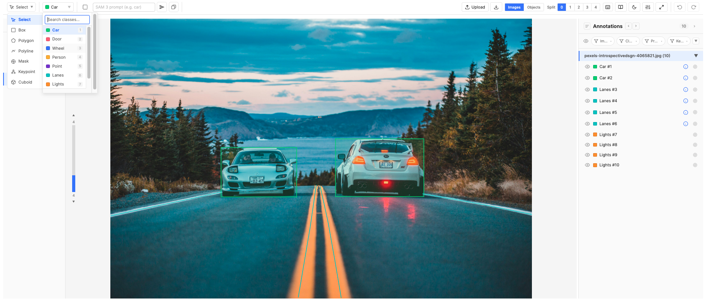
Key Capabilities
- Seven annotation tools — bounding boxes, polygons (with boolean operations and editing mode), polylines, pixel masks (with polygon/box/circle/square shapes), keypoint skeletons, rotated boxes, and cuboids (3D bounding boxes). Drawing Tools →
- AI-assisted labeling — SAM 3 auto-detects objects from text prompts (full-image or region-based); a configurable AI model (OpenAI / Gemini / Anthropic) extracts text and properties from image crops. SAM 3 → · Region SAM 3 → · AI Auto-Fill →
- AI-powered tracking — SAM 2 Tracking uses Meta's SAM 2 model to propagate bounding boxes and masks across frames automatically, with optional point prompts for precision. Supports tracking up to 10 objects simultaneously with parallel API calls. SAM 2 →
- Multi-image items — group video frames (configurable FPS), PDF pages, DICOM/NIfTI slices, or multi-camera views into a single annotatable item. Image Management →
- Split View — compare multiple frames side by side in a grid layout for quick visual audits and progress checks. Split View →
- Configurable classes & properties — define the exact annotation schema your model needs. Classes → · Properties →
- Cross-frame tracking — link annotations across frames with auto-assigned IDs, one-click propagation (T), and bulk deletion by tracking ID. Tracking →
- Frame status management — track annotation progress with statuses (Not Started → Completed), filter by status, and perform bulk status changes. Status Management →
- Import / Export — JSONL import for pre-loaded datasets, ZIP export with annotations + ID mappings. Import → · Export →
- Keyboard-driven workflow — 30+ shortcuts for tool switching, class selection, navigation, tracking, and QA review. Shortcuts →
How It Works
The tool has two modes, keeping setup separate from annotation:
- Configuration mode — An admin defines classes, tags, properties, skeleton structures, access control, feature toggles, and AI proxy connections. This schema determines what annotators can create.
- Working mode — Annotators open items and label images. Annotations auto-save continuously.
Typical flow: Import images via JSONL → annotators label items → export annotations for model training.
First Annotation in 60 Seconds
- Open an item in the editor.
- Select a class from the class dropdown (or press 1–9).
- The drawing tool auto-switches to match the class type.
- Draw on the canvas — click-drag for boxes, click vertices for polygons, paint for masks.
- The annotation appears in the right panel. Fill properties if configured.
- Everything auto-saves. Move to the next annotation.
Configuration
Configuration defines the labeling schema — what annotators can create, what metadata they capture, and which AI features are available. A well-designed configuration is the single most impactful step before annotation begins.
Access Control
Access Control is a set of per-feature role allow-lists. Each control gates a separate capability and you choose which roles can use it:
- Upload Files — which roles can use the in-editor Upload button to add new images, PDFs, videos, or DICOM/NIfTI files.
- Download Annotations — which roles see the Download button to export the item as a ZIP.
- Annotation Isolation — Off or By User. When set to By User, each user only sees their own annotations in the editor and on export; the Bypass Isolation role list lets specific roles (e.g. QA leads) see everyone's work. See Annotation Isolation.
Roles are sourced from the SuperAnnotate platform's role list. All Roles is the default for Upload Files; No one is the default for Download Annotations and Bypass Isolation, so a fresh project is locked down until an admin opts roles in.
Feature Control
Feature Control turns optional editor capabilities on or off, then exposes finer-grained role lists for the ones that need them:
- Object Comments (Off / On) — enables comments on annotations. When on, two sub-controls appear: which roles can resolve / unresolve comments and which can delete them.
- Instance Relationships (Off / On) — enables relationships between annotations. When on, a Relationship Types editor appears so admins can curate the relationship taxonomy (e.g. parent-of, previous, same-as). Relationship type names must be unique (case-insensitive); duplicate or empty names are silently reverted on blur.
- Annotation Panel — controls which views of the annotation panel are available: Instance + Table, Instance only, Table only, or None. The adjacent Configure Annotation Panel button becomes active whenever the panel is enabled (any mode other than None); the Table Column Settings button further activates when the table view is specifically reachable (Instance + Table or Table only).
Annotation Panel Settings
Click Configure Annotation Panel… to set the project-wide defaults that apply when an editor is first opened. Each control commits live — Done simply closes the modal and Restore to Default clears every setting in this modal back to the built-in baseline. Editors can still resize, regroup, or reorder per-session from the panel header; this modal only controls what they start with.
- Default panel width. Optional percentage (between 20% and 75% of the editor's container width) used as the starting width of the annotation panel. Out-of-range values snap to the closest valid percentage; leave the field blank to fall back to the built-in default of 480 px. Once an annotator drags the resize handle in the editor, their per-session width takes over until they reload.
- Default Group By. Initial grouping mode for the panel (Image Name, Class Name, Tool Type, Frame Status, or any project property). Property options are gathered from every regular and tag class. If the chosen property has 100 or more distinct values across the open item, the editor falls back to Image Name grouping for that session — the configured selection re-engages automatically once the dataset shrinks below 100.
- Default Order By. Initial ordering of instances (JSON Export, Image Name, Class Name, Tool Type, Frame Status, Created By, Creator Role, Created At, or any project property). Drag-to-reorder in the panel only writes to the JSON-export order, so it is only available when Group By is set to Image Name and Order By is set to JSON Export — either as project default or at the per-session level.
Reset chevron in the editor. Each Group By / Order By dropdown in the editor has a small reset arrow next to its title to revert to config-selected defaults.
Table Column Settings
Click Configure columns & groups… to open a two-panel modal that controls the Table View columns for the whole project.
Left panel — Columns. Lists every column currently available (excluding role-hidden ones). Drag rows to reorder; uncheck Show to hide a column by default; click the pin icon on the right of each row to pin a column to the leading edge of the table. Changes are saved immediately — Done simply closes the modal. Restore to Default clears all column, group, and pin overrides.
Pinned columns. Pinning glues a column to the leading edge of the Table View: the rest of the table scrolls horizontally underneath while pinned columns stay in place. Pinned columns always render before any unpinned column, in the order you set in this modal — drag-reordering only swaps positions within the same cluster (pinned ↔ pinned, or unpinned ↔ unpinned), so the only way to move a column between clusters is the pin button itself. Pin state is independent of Show: a column can be pinned but hidden by default (its pin icon dims to signal the dormant state), and the pin reactivates the next time the column or its owning group is shown.
Right panel — Column Groups. Groups let you bundle related columns so editors can show or hide them all at once with a single toggle chip in the Table View. Click + Add Group to create a group, give it a short label, and pick columns from the dropdown. Group labels must be unique (case-insensitive); duplicate or empty labels are silently reverted. Each column can belong to at most one group. Columns assigned to a group have their individual Show checkbox controlled by the group's visibility toggle. Empty groups (no columns selected) are automatically removed when the modal closes.
- Per-session user adjustments. Annotators keep their existing per-session control via the Columns dropdown and the column group chips — their adjustments don't persist across reloads; the project default does.
- New columns appear at the end, visible. Adding a new property or relationship type after configuring defaults appends it visible. Reopen the modal to reposition or hide it.
- Stale entries keep their position. Removing a column source (e.g. toggling Comments off) doesn't drop its stored position — it returns to the same spot if re-enabled later.
Classes & Tags
Both classes and tags live on the right column of the configuration screen — classes describe what annotators draw on the canvas, tags describe what they say about the image or item as a whole. Both can carry properties and per-role hide / view-only restrictions.
Classes
Classes define the vocabulary of your annotations. Each class has a name, color, and annotation type that determines which drawing tool is used:
| Type | Best for | Tool |
|---|---|---|
| Bounding Box | Object detection — fast, rectangular regions | Box (B) |
| Polygon | Irregular boundaries — precise outlines | Polygon (P) |
| Polyline | Linear features — lanes, cracks, contours | Polyline (L) |
| Mask | Pixel-level segmentation — amorphous shapes | Mask (M) |
| Keypoint | Structural landmarks — pose, anatomy | Keypoint (K) |
| Rotated Box | Tightly fit objects at an arbitrary angle (aerial, oriented text) | Rotated Box (Shift+B) |
| Cuboid | 2D-projected 3D bounding boxes (front + back face) for objects with depth | Cuboid (D) |
Class names must be unique (case-insensitive); duplicate or empty names are silently reverted on blur. The first 9 classes are accessible via number keys 1–9; arrange your most-used classes first. When an annotator changes the class, the editor auto-switches to the matching tool. Each class also accepts Hide From Roles and View-Only Roles lists so you can scope which roles see or edit annotations of that class.
Classes can be exported as JSON via the toolbar's Download button and re-imported with Upload, making it easy to copy schemas between projects.

Tags
While annotations describe regions inside an image, tags describe the image (or the whole item) itself. Use them for things that don't need a shape — image quality, capture device, source split (train / val / test), modality, scene description, dataset partition.
Tag classes have the same fields as annotation classes (name, color, properties, role lists) except they don't have a tool type — they're applied to media, not drawn. Each tag class has a scope:
- Image-scope (default) — one tag value per image / frame. The annotator opens the tag panel on each frame and fills in the tag's properties for that frame. Useful for things that vary per frame: per-slice quality in a CT volume, per-page condition in a scanned document.
- Item-scope — one tag value for the whole item, shared across all frames. Useful for item-level metadata like split, source, capture date.
Tag names must be unique (case-insensitive); duplicate or empty names are silently reverted on blur.
Item-level tags do not support AI Text or AI Select properties. AI Text and AI Select need a specific image crop to extract from, and an item with multiple frames has no canonical "the image" for the model to read. If you change a tag class from image-scope to item-scope while it has AI Text properties, the configuration screen automatically migrates them to Free Text; AI Select properties are downgraded to plain Select. A notice is shown in both cases.
Properties
Raw geometry only tells a model where something is. Properties attach structured metadata — text, categories, AI-generated descriptions, numeric measurements — to each annotation, transforming simple shapes into rich training samples. Properties live on classes (per-annotation values) and on tag classes (per-image / per-item values). Property names must be unique within their class or tag (case-insensitive); duplicate or empty names are silently reverted on blur.
Property Types
| Type | What it captures | Example |
|---|---|---|
| Free Text | Open text input | Notes, IDs, transcriptions. Can be designated as a Track ID for cross-frame tracking. |
| AI Text | Auto-filled by the configured AI Property Proxy from the annotation's image crop. A per-property default prompt guides the extraction. | Captions, OCR transcriptions, descriptions. See AI Auto-Fill, OCR, Captioning. Not available on item-scope tag classes. |
| Select | Dropdown with predefined options. Supports Allow Multi-Select for multiple-choice fields. | Quality ratings, categories, conditions. Forces consistency across annotators. |
| AI Select | Select field whose options are auto-chosen by the configured AI Property Proxy from the annotation's image crop. Combines a predefined option list with AI-driven pre-selection. A per-property default prompt guides the extraction. See AI Auto-Fill. | Auto-classification, attribute tagging, condition assessment. Not available on item-scope tag classes. |
| Numeric | Numeric input with optional min, max, step, and unit (e.g. "px", "mm"). | Confidence, severity score, lesion diameter, count. |
| Approval | Three-state verdict — Approved, Disapproved, or unset — rendered as a thumbs-up / thumbs-down picker. Stores "true" / "false" in propertyValues (absent when unset). No options, no numeric bounds, no AI hookup. | QA sign-off, peer review verdicts, "looks correct?" gates on tags. |
Additional Options
- Required — marks a property as mandatory. In the editor, a red indicator appears until all required properties are filled.
- Default values (Select only) — option(s) pre-selected when a new annotation is created. For multi-select, multiple defaults are allowed.
- Track ID — designate one Free Text property as the tracking identifier on a class. Enables cross-frame tracking and SAM 2 Tracking.
- AI Text / AI Select: Default Prompt — the system prompt the model receives when the wand or pencil icon is clicked. Annotators with the right role can also override it per-run.
- AI Text / AI Select: Referencing other properties — inside a Default Prompt you can embed the live value of a sibling property on the same class / tag. Type
{to pick a property from the autocomplete; it inserts a coloured reference chip (e.g. a blue {Transcription}) rather than plain text. At extraction time each chip is replaced with that property's current value on the same annotation / tag row — never a value from another row. References track the property by ID, so renaming the referenced property updates every chip automatically; deleting it leaves a red "broken" chip. See AI Property Auto-Fill for how chips resolve at run time. - AI Text / AI Select: Enable Editing — for AI Text, controls whether annotators can tweak the prompt before extraction; for AI Select, controls whether annotators can review and override the AI's selection. When off, AI output is applied as-is.
- Text Display (Free Text and AI Text) — a three-way toggle that sets how the field is presented; the three modes are mutually exclusive:
- Inline (default) — a compact resizable textarea shown directly in the popover / table cell. Best for short values.
- Modal — opens a roomy plain-text modal that stores the value exactly as typed (no formatting, no conversion). Best for long or structured plain text — e.g. raw HTML, JSON, or multi-line snippets you need preserved verbatim.
- Rich Text — opens a rich-text modal with inline formatting, useful for longer values like detailed descriptions or multi-paragraph captions.
- Hide From Roles / View-Only Roles — restrict who sees or edits this property.
- Option Visibility Rules (Select and AI Select) — see Option Visibility Rules for hierarchical / conditional options.
- Info — short helper text shown next to the property in the editor.

Property Visibility Rules
A property visibility rule controls whether an entire property is visible and editable on a given annotation or tag, based on the value of one or more sibling Select / AI Select properties. Use this when a whole field only makes sense in a specific context — e.g. only show "Tire Pressure" when "Has Wheels" is "Yes", or only show "Lesion Diameter" when "Severity" is "High". This is the property-scope equivalent of option visibility rules: option rules hide individual options inside a Select; property rules hide the whole property.
Property visibility rules can be set on any property type (not just Select / AI Select). A Free Text, Numeric, AI Text, AI Select, Select, or Approval property can all be gated by a rule. The controller must still be a sibling Select-like property in the same class or tag class.
Setting Up a Rule
- Open the property modal for a class or tag class.
- In the property card's right-hand header, click the chain icon next to the copy / delete buttons. The icon is only enabled when the class has at least one sibling Select-like property to use as a controller.
- An inline rule editor expands below the property card — same shape as the option-rule editor: choose All conditions match (AND) or Any condition matches (OR), then add one or more conditions picking a controller property and which value(s) it must hold.
- Click the chain icon again (or the editor's × / Remove rule button) to collapse / clear the rule.
The chain icon shows a small numeric badge with the rule's condition count when a rule is active, and switches to a blue tint so you can spot rule-bearing properties at a glance in the property list.
Behavior in the Editor
- Greyed-out field — when the rule is unsatisfied, the property still appears in the popover and table column (so annotators can see the field exists), but it's rendered dimmed with a not-allowed cursor. Hovering anywhere over the disabled field shows a tooltip explaining what controls it (e.g. "Controlled by: Material = Wood").
- Stored value cleared — the moment a rule becomes unsatisfied (e.g. the user changes a controller value), any value stored on that property is automatically cleared. The clear cascades: if A controls B, and B itself controls C, changing A clears both B and C in one step.
- Required validation suppressed — an inaccessible property is not counted as "missing required" even when marked Required. The red required indicator on the annotation / tag row only reactivates when the rule becomes satisfied and the field becomes editable again.
- AI extraction skipped — for AI Text / AI Select properties, the wand and "Extract" / "Edit prompt" buttons in the property popover (and per-cell wand icons in the table) skip any AI property whose rule is unsatisfied. The buttons appear / disappear immediately as the controller value changes, no popover reopen needed.
- Modal / Rich Text properties — a property gated by an unsatisfied rule renders as a plain "—" placeholder; its modal (plain-text or rich-text) cannot be opened.
- Default values disabled — when a Select property has a property visibility rule, the per-option "Default" checkboxes in the configuration screen are disabled. Defaults wouldn't make sense for a property that may not even be visible on instance creation; the configuration UI prevents the contradiction up-front.
For details on how property visibility rules interact with option visibility rules on the same property, see Property & Option Rule Hierarchy in the editor section.
Copying properties between classes
When two classes share metadata fields (e.g. every annotation needs a Confidence Numeric and a Notes Free Text), redefining each property on every class is tedious. The properties modal has a Copy to other classes… action: pick the target classes from a checklist, and the property is duplicated into each of them with a fresh ID.
- The property is cloned — edits on the source after the copy don't propagate.
- If a property carries any option visibility rules or a property visibility rule, the copy tool tries to remap each rule's controller references against the target class's properties: it looks for a sibling property with the same name (case-insensitive) and whose option list contains every value the rule references. When all of a rule's conditions can be remapped this way, the rule carries through fully into the target. When even one condition cannot be remapped (controller absent, or its option list is missing required values), the entire rule is dropped on that target — partial remapping is refused because keeping a "best-effort" subset of an "all conditions match" rule would silently weaken it.
- If an AI Text / AI Select property's Default Prompt embeds references to sibling properties, the copy tool tries to remap each reference into the target class by matching a sibling with the same name (case-insensitive). Matched references re-point to the target's property; references with no name match in the destination are kept as broken (red) chips rather than silently dropped — so the admin can re-point or rewrite them in the target. The copy modal notes how many references won't resolve on each affected target.
- The copy modal stays quiet on success and only surfaces a per-target warning when one or more rules will actually be dropped, so you can spot the targets where shape divergence matters before confirming.
- If a target class already has a property with the same name, the modal shows an inline warning before you commit.
- Tag classes can copy to / from other tag classes the same way.
Option Visibility Rules
When a class or tag has multiple Select properties, you can create dependencies between them. An option visibility rule makes one property's options conditionally visible based on what is selected in another property of the same class/tag. This lets you build hierarchical relationships — for example only showing relevant subcategory options when a particular category is selected.
Option visibility rules apply to Select and AI Select properties alike. An AI Select property can be a controller or a dependent in a rule chain — the AI pre-selection respects the same filtering, and cascade clearing applies to AI-chosen values exactly as it does to manual ones.
When to Use
- Category → Subcategory — A "Category" property has 5 options; a "Subcategory" property has 20 options. Instead of showing all 20 regardless, you configure each subcategory option to only appear when its parent category is selected.
- Conditional attributes — A "Damage Type" dropdown controls which "Severity" options are relevant.
- Multi-level filtering — Rules can reference multiple controller properties and combine with AND/OR logic for complex taxonomies.
Key Concepts
| Term | Meaning |
|---|---|
| Controller property | The Select property whose value determines what options appear on the dependent property. Must be a sibling (in the same class or tag class). |
| Dependent property | The Select property whose options are conditionally shown/hidden based on the controller's value. |
| Visibility rule | A per-option configuration that says "only show this option when condition X is met on the controller". |
| Unconditional option | An option with no visibility rule — always shown regardless of what the controller says. This is the default. |
Setting Up a Rule (Configuration Screen)
- Open the property modal for a class or tag class.
- On any Select property that has at least one sibling Select property, each option row shows a chain icon (⛓).
- Click the chain icon on the option you want to make conditional. The inline Visibility Rule Editor expands below that option.
- Click + Add condition. Choose the controller property from the dropdown, then select which of the controller's option values must be active for this option to be visible.
- For multi-condition rules, choose All (AND) or Any (OR) at the top to control how conditions combine.
- When done, click the collapse arrow or click the chain icon again to close the editor.

Rule Logic
- Single-select controller — The condition passes if the controller's stored value is any one of the listed values (implicit OR across the selected values in the rule picker).
- Multi-select controller — You choose any (at least one of the listed values is selected) or all (every listed value must be selected).
- Multiple conditions — Combined with a top-level All (every condition must pass) or Any (at least one must pass).
- Empty controller — An empty/blank controller value always counts as "unsatisfied" — the dependent option stays hidden.
Behavior in the Editor
Once rules are published, annotators see them enforced immediately in both the property popover and the table view:
- Option filtering — The dependent property's dropdown only shows options whose rule is currently satisfied by the controller's value on that same row (annotation instance or tag).
- Cascade clearing — If the annotator changes the controller value and a previously-selected dependent option is no longer valid, it is automatically cleared. This cascades: if A controls B and B controls C, changing A can clear both B and C in one step.
- Controller indicator — Dependent properties show a small chain icon on their label with a tooltip listing which properties control their options (e.g. "Options here are filtered by: Category, Region").
- Config-triggered cleanup — If an admin changes rules after annotations already exist, the next time an annotator opens an item, any stored values that violate the new rules are cleaned in memory. The cleanup persists on the annotator's next save.

Interaction with Default Values
Default values and visibility rules are mutually exclusive on the same option. An option marked as Default cannot have a visibility rule, and vice versa. The configuration UI enforces this:
- If "Default" is checked on an option, the chain icon is disabled (tooltip explains why).
- If a visibility rule exists on an option, the Default checkbox is disabled.
This prevents the scenario where a default value would be immediately cascade-cleared on instance creation because its rule isn't satisfied.
Cross-Property Copy
When copying a property that has visibility rules to another class, the copy tool attempts to remap each rule's controller references against the target class's properties. For a rule to carry through, every controller referenced by its conditions must exist in the target by name (case-insensitive) and the target controller's option list must contain every value the rule references. If even one condition can't be remapped, the entire rule is dropped on that target — partial remapping is refused because silently dropping conditions from an "all conditions match" rule would weaken its logic (e.g. A AND B collapsing to just A).
The copy modal stays quiet when every rule carries through cleanly, and surfaces a per-target warning only on targets where one or more rules will be dropped. The same name + shape check applies whether the rule is a per-option rule on this property or a property-level visibility rule. See Copying properties between classes for the full copy flow.
Broken References
If a controller property is deleted or its type is changed away from Select while a dependent still references it, the condition is shown with a red border and alert icon in the configuration screen. The broken condition is preserved during the config session so admins can see what happened. On publish, broken conditions are automatically stripped.

Skeleton / Keypoint Setup
Pose estimation models need to know which landmark is where and how landmarks connect. The skeleton definition encodes this structure — named points and their connections — so the Keypoint tool guides annotators through consistent, ordered placement.
- Add named points (e.g., "Head", "L-Shoulder", "R-Knee") — order determines placement sequence. Point names must be unique within the skeleton (case-insensitive); duplicate or empty names are silently reverted on blur.
- Configure connections (undirected edges) between points to define the skeleton topology.
- Connection Colors (optional) — assign custom colors to specific connections via the third column of the skeleton modal. Each row picks a color and one or more connection pairs from a dropdown; assigned pairs are disabled in other rows so each connection belongs to at most one color. Connections not assigned to any row keep using the class color, so existing skeletons are unaffected. Empty rows are pruned on Done.
- Only available for classes with Keypoint type.
- See Pose Estimation for a full skeleton example, and Keypoint QA Filtering for review workflows.
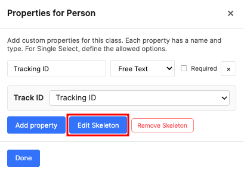

AI Proxy Setup
All AI features in this tool — AI Text and AI Select property auto-fill, the documentation Ask AI assistant, and the SAM 2 / SAM 3 segmentation features — communicate with external providers through SuperAnnotate Proxies. Proxies act as secure intermediaries: your team's API keys live server-side in SuperAnnotate and are never exposed to annotators or front-end code.
Two independent proxies feed two distinct capabilities:
| Proxy | Provider options | Powers |
|---|---|---|
| AI Property Proxy | OpenAI, Gemini, or Anthropic — the proxy's allowed-domain hostname determines which provider is used. | AI Text and AI Select property auto-fill (vision), the in-docs Ask AI assistant (chat). |
| Fal.ai Proxy | Fal.ai (fal.run) | SAM 3, Region SAM 3, SAM 2 Tracking. |
You can wire up either or both — only the features whose proxy is configured become available in the editor. Models used today: gpt-5.4-nano (OpenAI), gemini-2.5-flash (Gemini), claude-haiku-4-5 (Anthropic).
Why Proxies?
- Security — API keys stay server-side inside SuperAnnotate. Annotators never see or handle raw keys.
- Centralized management — Team admins create and rotate proxies in one place; all project components inherit the change automatically.
- Audit & control — Proxy usage is logged per team, making it easy to track costs and enforce rate limits.
Step 1 — Create Proxies in SuperAnnotate
Before configuring this component, a team admin must create the required proxies in the SuperAnnotate platform:
- Open SuperAnnotate → navigate to your Team Settings.
- Go to the Security section → Proxies tab.
- Click Create Proxy. Set the Allowed Domain to one of the supported endpoints — the editor reads the hostname to detect which provider you've wired up:
Provider Allowed Domain Used For OpenAI api.openai.comAI Property Proxy (vision + chat) Gemini generativelanguage.googleapis.comAI Property Proxy (vision + chat) Anthropic api.anthropic.comAI Property Proxy (vision + chat) Fal.ai fal.runFal.ai Proxy (SAM 2 / SAM 3) - For each proxy, add an authorization Header under the proxy's Secrets list. The format depends on the provider:
Provider Header Key Header Value OpenAI authorizationBearer <your-openai-key>Gemini x-goog-api-key<your-gemini-key>Anthropic x-api-key<your-anthropic-key>Fal.ai authorizationKey <your-fal-key> - Save each proxy. The proxy name is what you'll select in the configuration dropdown.
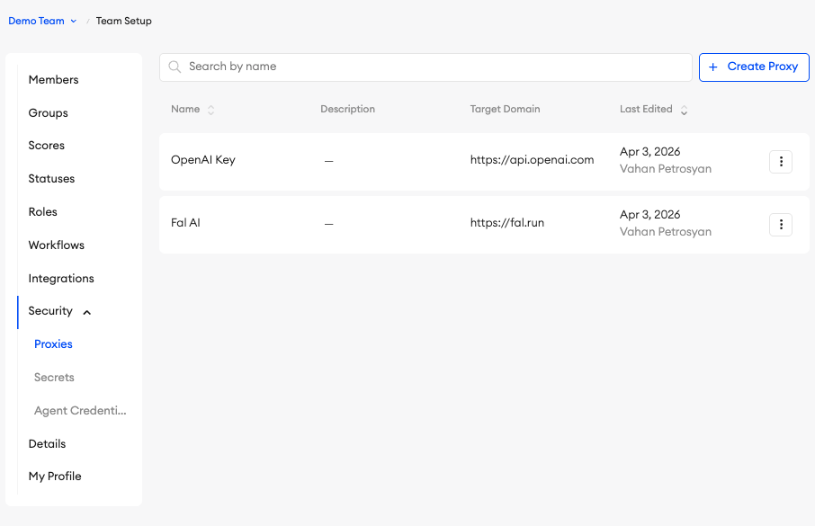

Step 2 — Select Proxies in Configuration
In the component's Configuration screen, under AI Proxy Configuration, you'll see two dropdown cards:
| Card | What to Select | Unlocks |
|---|---|---|
| AI Property Proxy | The proxy you created for OpenAI, Gemini, or Anthropic | AI Text and AI Select property auto-fill, wand / pencil icons, Ask AI in documentation |
| Fal.ai Proxy | The proxy you created for Fal.ai | SAM 3 auto-detection, Region SAM 3, SAM 2 Tracking |
Each dropdown is automatically populated with all proxies available in your team. Select the appropriate one and the Saved badge appears. The AI Property Proxy card additionally shows a provider badge (OpenAI / Gemini / Anthropic) once a proxy is selected, so you can confirm at a glance which provider the editor will route through.
Once a proxy is selected, a Model dropdown appears next to it. Three models are offered for each provider, sorted from cheapest/fastest to most capable — the middle option is selected by default. The currently available models are:
| Provider | Models (cheapest → most capable) |
|---|---|
| OpenAI | gpt-5.4-nano, gpt-5.4-mini, gpt-5.5 |
| Gemini | gemini-3.1-flash-lite, gemini-3.5-flash, gemini-3.1-pro-preview |
| Anthropic | claude-haiku-4-5, claude-sonnet-4-6, claude-opus-4-7 |
Changing the proxy to a different provider resets the model to that provider's default (middle tier). The selected model applies to both vision-based property extraction and the Ask AI assistant — annotators in the editor are not affected and do not see which model is active.

Fal.ai Feature Toggles
Below the Fal.ai proxy selector, four checkboxes let you choose which Fal.ai-gated features are exposed in the editor. All four default to on, so existing projects keep their current behavior — you only need to touch them to hide a feature your annotators don't need.
| Toggle | What it controls |
|---|---|
| SAM 2 Tracking | The SAM 2 Tracking section in the popup that appears when a trackable annotation is selected. Disabling this hides the popup's track row but leaves the AI-property "Extract" row intact (that uses the AI Property Proxy). |
| SAM 3 Region | The Region SAM 3 dashed-square button in the toolbar. |
| SAM 3 Image | The single-image SAM 3 button (and the Enter shortcut while the SAM prompt is focused). |
| SAM 3 Range | The multi-image SAM 3 button that opens the frame-range dropdown. |
The shared SAM prompt input is hidden only when all three SAM 3 features (Region, Image, Range) are off; if any of them is on the prompt remains. Turning all four toggles off collapses the entire SAM toolbar group so the toolbar doesn't show an empty section.
If you check any feature but haven't selected a Fal.ai proxy, an amber warning appears in the configuration card — those features will still show in the editor but will toast a "Fal.ai Proxy is not configured" error when invoked.
Troubleshooting
- "No team available" in the dropdown — The component could not detect your team. Make sure the component is loaded within the SuperAnnotate platform.
- "Failed to load proxies" — Network error fetching the proxy list. Refresh the page and try again.
- "AI Property Proxy is not configured" or "Fal.ai Proxy is not configured" toast in the editor — Return to Configuration and select the appropriate proxy.
- "Unsupported AI proxy domain" — The proxy you selected isn't routed to one of the supported hostnames. Recreate it with an allowed domain of
api.openai.com,generativelanguage.googleapis.com, orapi.anthropic.com. - SAM 2 / SAM 3 buttons missing from the toolbar — Check the Fal.ai Feature Toggles below the proxy selector. Each feature can be disabled independently; if all four are unchecked, the entire SAM toolbar group is hidden.
- Proxy returns errors at runtime — Verify the proxy's API key is valid and has sufficient quota in the SuperAnnotate Security → Proxies panel.
See API Rate Limits for usage guidance with large datasets.
Keyboard Shortcuts
Shortcuts eliminate menu navigation. Learning the core 10 can double annotation speed. See Class Shortcuts tip and Tab Navigation tip for workflow advice.
Tools
| Key | Action |
|---|---|
| S | Select tool — move, resize, edit vertices |
| B | Bounding Box |
| P | Polygon (last used mode) |
| L | Polyline |
| M | Mask |
| K | Keypoint |
| Shift+B | Rotated Box |
| D | Cuboid |
| 1–9 | Select class by index (auto-switches tool to match class type) |
Drawing & Editing
| Key | Action |
|---|---|
| Double-click | Finish polygon or polyline |
| Esc | Cancel current drawing / exit edit mode / clear selection |
| . / , | Skip / go back during keypoint placement or skeleton editing |
| E | Toggle mask eraser (mask tool only) |
| [ / ] | Decrease / increase mask brush size |
| Del / Backspace | Delete selected annotations |
| T | Track: copy selected annotation(s) to next frame |
| H | Toggle visibility of all annotations |
| Ctrl(⌘)+C / Ctrl(⌘)+V | Copy / Paste (cross-image) |
| Ctrl(⌘)+Z | Undo |
| Ctrl(⌘)+Shift+Z / Ctrl(⌘)+Y | Redo |
Navigation
| Key | Action |
|---|---|
| ↑ / ↓ | Previous / next image frame |
| Tab | Next annotation with auto-zoom |
| Shift+Tab | Previous annotation |
| Enter | SAM 3 — run on current image (when SAM prompt focused) |
| Scroll wheel | Zoom to cursor |
| Right-drag / Alt(⌥)+left drag / Middle-drag | Pan |
In-app reference (open from the toolbar shortcuts button):
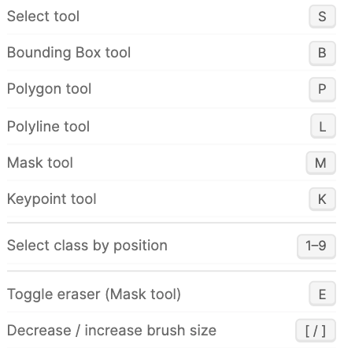
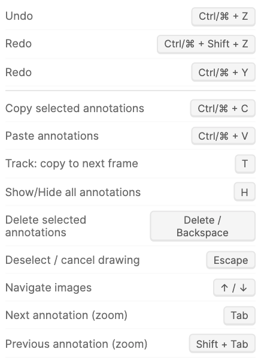
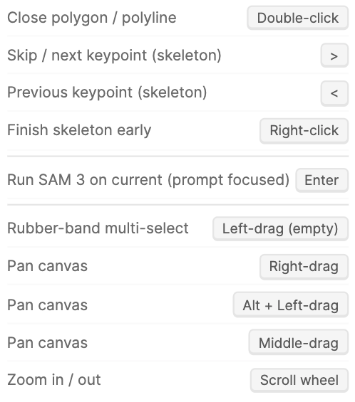
Project Instructions
Annotation accuracy depends on annotators understanding the schema, edge cases, and conventions specific to your project. Project Instructions let admins upload per-role PDF guides — each role can be given its own document (annotators see "how to label", QA reviewers see "what to check"), or one PDF can be shared across roles.
- In the Project Instructions card, pick a role from the dropdown and choose a PDF file. The file is base64-encoded and stored inside the configuration alongside the role mapping.
- One PDF per role; uploading a new file replaces the previous one for that role.
- In the editor, the Instructions button (on the toolbar) opens the PDF for the current user's role in a built-in PDF viewer (multi-page navigation, zoom, page jump). If no instructions are uploaded for the user's role, the button is hidden.
- Files travel with the configuration — exporting / importing config (below) carries the instructions along, so duplicating a project across teams is one click.
Item Context
Item Context adds an optional strip of rich-text slots above the editor canvas. Use it for per-item system prompts, task-specific notes, or short instructions that arrive with the item or are written by annotators in the editor. Slot content supports the same rich text formatting as rich-text properties (bold, italic, headings, lists, blockquotes, code, links, and tables). Off by default; toggle it on from the Item Context card and click Configure slots… to manage the slot list.
- 1–10 slots per project — each one becomes a tab in the editor's Item Context section. Add slots with the + Add slot button; drag the handle to reorder; click the × to delete.
- Stable internal id — every slot gets an opaque id (e.g.
ctx-abc123) at creation. Renaming or reordering a slot in config never moves stored item data; values stay attached to the same id forever. The id is also exposed in name2id.json so JSONL authors can address slots by name on upload. - Unique slot names — names must be unique per project (case-insensitive), same rule as classes and tags.
- Per-role visibility — each slot has independent Hide From and View Only role pickers (same widget as class and tag visibility). Defaults for new slots are Hide From: No one and View Only: All Roles — i.e. visible read-only to everyone until admin opts a role into editing. If a role is on both lists, Hide From wins.
- Default section height — admin sets the initial height of the strip in the editor (100–500 px, default 200 px). Annotators can drag-resize it for their session, but resized values are not persisted — every reload starts at the admin default.
- Disabling is non-destructive — toggling Item Context off keeps the configured slots and any per-item values on disk; turning it back on later restores everything as it was.
- Deleting a slot leaves prior values on disk as orphans — they no longer appear in the editor but ride through subsequent saves and downloads. Adding a new slot later generates a fresh id; orphan values do not reattach automatically.
- Minimum one slot when enabled — the last slot can't be deleted while the feature is on. Disable Item Context to clear the strip entirely.

Partial Image Loading
For multi-frame items — long video sequences, paginated PDFs, large DICOM stacks, or any project with hundreds of frames per item — loading every frame into memory at once is slow and can crash the browser tab. The Frame Loading setting in the configuration's Advanced card lets you swap the default "load everything" behaviour for a sliding window. This feature is unique to the image annotation tool because it's the only one that ships frame-sequence items.
- Load All Frames (default) — every frame is fetched and decoded up front. Best for short items (under ~50 frames) and pre-recorded review sessions where lag-free random access matters more than memory.
- Partial Loading — only a window around the active frame is kept in memory. Configure two extra fields:
- Frames Before Current (1–50, default 20) — frames retained behind the playhead so backwards seeking is instant.
- Frames After Current (5–200, default 100) — frames pre-loaded ahead of the playhead.
- The window centres on the current frame; as the annotator advances or jumps, frames outside the window are released and frames entering it are pre-fetched in the background. The active frame is always loaded synchronously so the canvas never goes blank.
- Partial Loading only activates automatically when an item has more frames than the window can hold (i.e.
before + 1 + after). Items smaller than that are loaded fully regardless of the setting, so there's no memory penalty for short items in the same project. - The mode and bounds are stored in the configuration as
frameWindowMode,frameWindowBefore, andframeWindowAfter. The validator clamps values to the allowed ranges; out-of-range numbers are rejected on config import.
Import / Export
The header of the configuration screen has two buttons that move the entire configuration as a single JSON document:
- Export config — downloads everything: classes, tag classes, properties, skeleton definitions, option visibility rules, access-control role lists, feature toggles, relationship types, table-column defaults, AI proxy IDs, Fal.ai feature flags, frame-window mode, and base64 instruction PDFs. Useful for cloning a project, version-controlling a schema, or seeding a new component instance.
- Import config — replaces the current configuration with the contents of an uploaded JSON file. The dialog warns first because the operation overwrites the existing config; legacy / deprecated fields (e.g. raw API keys from older exports) are stripped on import.
The header also includes a Download name2id.json button that exports the name-to-ID mapping file directly from the config screen. This is the same name2id.json included in annotation ZIP downloads, but available here so admins can obtain it without creating items or entering the editor — useful when preparing JSONL imports or integrating with external pipelines.
Class and tag lists also have their own per-list Upload / Download buttons (see Classes) for moving just the schema fragment without touching access control or proxies.
Editor
The editor is where annotation happens. Its layout keeps your eyes on the image while providing quick access to tools, metadata, and review controls.
Editor Layout
Four regions, each with a purpose:
- Top toolbar — tool/class selection, AI features, upload/download, adjustments, undo/redo.
- Left image strip — frame navigation for multi-image items. Hidden for single-image items.
- Center canvas — the main annotation workspace. Supports zoom and pan.
- Right annotation panel — searchable, filterable list of all annotations. Resizable and collapsible.
Top Toolbar
Left to right: tool dropdown, class dropdown, Region SAM 3 icon, SAM 3 prompt + buttons, upload/download, Images/Objects toggle, Split View toggle, shortcuts, tool documentation pop-up, dark mode toggle, settings, fullscreen toggle, undo/redo.
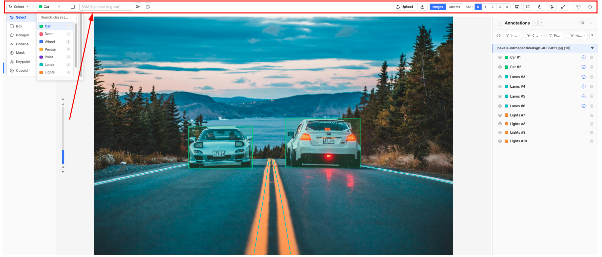
Drawing Tools
Different objects require different geometry. The tool set spans fast approximate shapes (boxes) to pixel-perfect segmentation (masks). The editor auto-switches tools when you change class, and blocks drawing if you try to use a tool that doesn't match the class type.
The Editor Layout screenshot above shows the tool menu (Select, Box, Polygon, Polyline, Mask, Keypoint, Rotated Box, Cuboid) and a single canvas with a bounding box, mask, and polyline applied together.
Select Tool (S)
Annotation is iterative — you draw, then refine. Select lets you adjust without redrawing: reposition boxes, drag polygon vertices, insert new vertices by clicking edges, and change class via right-click context menu.
- Click to select a single annotation. Rubber-band drag for multi-select.
- Drag to move. Bbox corners/edges to resize.
- Right-click → change class.
Bounding Box (B)
The fastest annotation type — one click-drag captures an object's extent. Standard input for object detection models (YOLO, Faster R-CNN). Also the foundation for the SAM 3 + AI workflow where boxes are auto-generated, then enriched with AI properties.
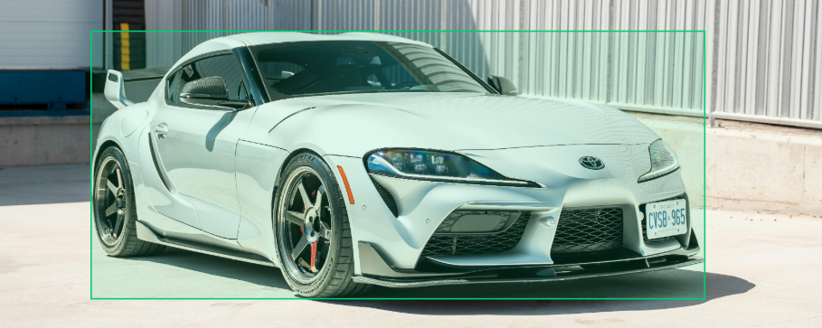
Polygon (P)
When objects have irregular shapes that boxes cannot capture — a winding road, an organ boundary, a torn document region — polygons trace the exact outline.
- Click to place vertices. Double-click to close.
- Freehand drawing — hold the mouse button and drag to draw smooth curves. The tool samples points as you move, then automatically applies Ramer–Douglas–Peucker simplification to reduce point count while preserving the shape.
- Three modes via the gear popup on canvas (see Polygon Tips):
- Polygon — standard new shape
- Polygon Subtract — remove a region from an existing polygon (holes, cutouts)
- Polygon Clip — clip the new polygon against existing polygons (no overlap, no gaps)
Polygon Editing Mode
After drawing a polygon, you often need to refine its boundary — adding detail to a rough outline, adjusting a section that doesn't follow the object edge, or inserting new vertices between existing ones. The polygon editing mode makes this fast and precise.
- Activate: Select a polygon → a pencil icon appears at the top-left corner of the polygon's bounding box. Click it to enter editing mode.
- Select a start vertex: Click any existing vertex (shown as larger circles in edit mode). The start vertex turns green.
- Add new points: Click on the canvas between vertices to add new points, or drag freehand to draw a smooth curve. Freehand strokes are automatically simplified using RDP approximation.
- Select an end vertex: Click another existing vertex to complete the edit. The tool determines the shortest path between your start and end vertices along the original polygon boundary, removes the vertices along that path, and replaces them with your new points.
- Visual feedback: A dashed green line shows the new path as you draw. New points appear as green circles.
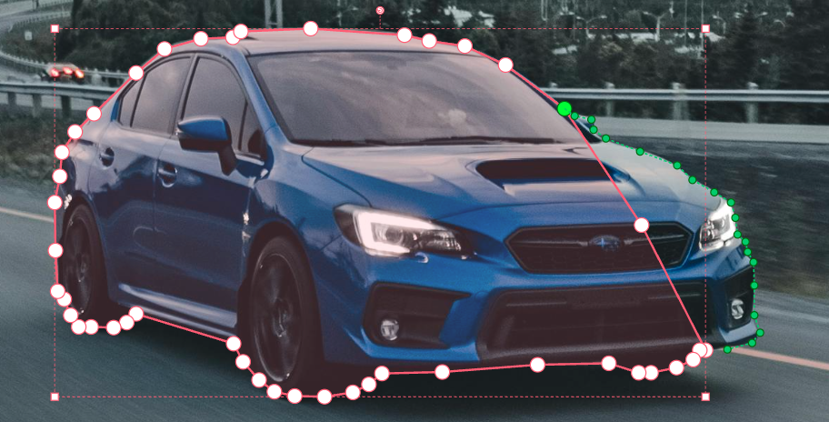
Polyline (L)
Some targets are linear, not regions — lane markings, cracks, cables. Polylines capture these without requiring a closed shape.
Mask (M)
Semantic and instance segmentation models need pixel-level labels. Unlike polygons that approximate curves, masks capture every pixel. The brush interface is intuitive for organic shapes, and SAM 3 can generate initial masks for refinement.
Settings (gear popup):
- Three modes (toggle Brush ↔ Eraser with the E shortcut):
- Brush — paint pixels into the mask
- Eraser — remove pixels from the mask
- Clip — paint without overlapping any existing mask on the image (no shared pixels across masks, regardless of class)
- Drawing shape — four options, each suited to different annotation patterns:
- Polygon (default) — click to place vertices forming a closed polygon, which is then rasterized into a pixel mask. Ideal for precise irregular regions. Supports freehand drawing with automatic RDP simplification.
- Box — click-drag a rectangle that fills into a mask. Fast for rectangular regions or as a starting point for eraser refinement.
- Circle — continuous round brush for painting organic shapes freehand.
- Square — continuous square brush for painting straight-edged areas.
- Size — slider or [ / ] keys (applies to Circle and Square brushes)
- Panoptic vs Semantic — Panoptic keeps separate instances (individual cells); Semantic merges all pixels of the same class (sky region). See Mask Tips
- Alpha — mask and hover transparency
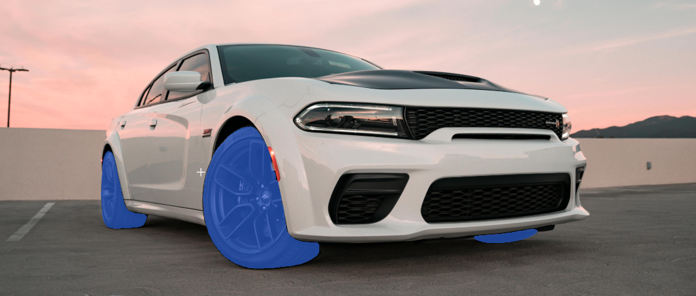
Keypoint (K)
Pose estimation and landmark detection require models to know the spatial arrangement of an object's parts. Keypoints encode named landmarks connected by a skeleton.
- Points are placed sequentially in skeleton order — prevents swapped landmarks.
- Hint labels — during placement (and edit mode), a hint at the top of the canvas shows the current expected point name with arrow buttons on either side that mirror the keyboard shortcuts. The label area is sized to fit the longest point name in the skeleton so buttons don't shift between points.
- . or the right arrow button skips the current occluded point. , or the left arrow button goes back. The left button is disabled on the first point; the right button always works and on the last point completes drawing/editing.
- In edit mode, a trash button on the hint (and Delete / Backspace) clears the currently focused point without removing the rest of the skeleton.
- Move whole skeleton — when a skeleton is selected, a small grab handle appears above its bounding box. Drag it to translate the entire skeleton; dragging the bbox outline or connection lines no longer moves it.
- Edit existing skeletons: Select tool → pencil icon on the annotation.
- QA: keypoint filtering finds placement errors across all annotations.
Rotated Box (Shift+B)
An axis-aligned Box wastes pixels when the target is at an angle — aerial vehicles, oriented text, tilted documents, rotated industrial parts. The Rotated Box (also known as an oriented bounding box) tightly fits objects regardless of their angle, so the cropped patch sent to a downstream model contains only the object and not large slabs of background.
- Three-click placement:
- P1 — first corner of one edge.
- P2 — second corner of the same edge. The line between P1 and P2 defines the box's top edge (where the rotation handle lives) and its initial rotation.
- P3 — any point on the side where the box should extend. The cursor is auto-projected onto the perpendicular through P2, so the rectangle stays a true rectangle no matter where you click. Live preview shows the final box before you commit.
- Editing: 8 resize handles (4 corners + 4 edge midpoints) drawn aligned with the rotated edges, plus a circular rotation handle on a stem out from the top edge midpoint. Hovering the rotation handle switches the cursor to a curved-arrow rotate icon.
- Snap to angle: hold Shift while dragging the rotation handle to snap rotation in 15° increments.
- Esc cancels drawing at any step.
- Supports manual T-shortcut tracking, copy/paste, AI Text properties, multi-select move, and foreground/background ordering. AI Text uses a rotated crop of just the box's pixels, so models see exactly what's inside the rectangle and not the surrounding background.
- Not compatible with SAM 3 or SAM 2 Tracking (only Box and Mask types).

Cuboid (D)
2D-projected 3D bounding boxes for objects with depth and perspective. The annotation stores eight 2D points — four for the front face and four for the back face — so the cuboid can be skewed to match the object's perspective rather than being limited to two parallel axis-aligned rectangles. Essential for autonomous driving, robotics, and warehouse use cases where spatial orientation matters but the data lives in image space.
- Four-click drawing:
- Front bottom start — click to place the first front-bottom corner.
- Front bottom end — click the other end of the front-bottom edge.
- Depth — click any point in the image to set the depth direction and length. The floor parallelogram preview appears here.
- Height — click above the base. Only the cursor's vertical distance is used; the side faces stay parallel for a clean perspective look.
- Rendering: Front face filled and outlined boldly, back/side edges drawn as thin solid lines.
- Editing: 8 square corner handles plus two round center handles — a depth handle (back-face center) translates only the back face, and a top handle (top-face center) translates the four top corners. Hold Shift while dragging the top handle to snap each top point's
xto its bottom counterpart so the side edges become vertical (the cuboid becomes "upright"). Dragging a front-left or front-right corner moves both that corner and the corresponding back-face corner together so the side edge stays straight; dragging any back-face corner translates the entire back face. - Supports T shortcut tracking, copy/paste, AI Text properties (cropped from the cuboid's bounding rectangle), and foreground/background ordering.
- Esc cancels drawing at any step. Backspace / Delete walks back one click at a time without losing earlier ones.
- Not compatible with SAM 3 or SAM 2 Tracking (only Box and Mask types).

Image Management
Real datasets are rarely single images. Medical scans have hundreds of slices, videos need frame-by-frame annotation, documents span pages, robots use multiple cameras. Multi-image items group related frames so annotators see full context and can track objects across frames.
Upload
The upload modal (when the user's role is allow-listed under Upload Files) supports four formats:
| Format | Behavior |
|---|---|
| Images | Multiple image files added as frames |
| Each page becomes a frame | |
| Video | Extracted at configurable FPS (1–30, default 1). An FPS slider appears when the Video card is selected — higher values capture more motion detail but produce more frames. Max 1000 frames per video file (extraction is truncated past the cap; raise FPS only when you actually need denser sampling). |
| DICOM / NIfTI | Medical volumes — each slice becomes a frame |
You can also drag-and-drop images directly onto the canvas, or pre-load images via JSONL import.
Frame Navigation
- Left image strip — vertical bin slider. Active frame in blue, tracked frames of the currently selected instance, in yellow.
- ↑ / ↓ to navigate. For 50+ frames, the slider auto-expands to 500px height.

Partial Loading (Frame Window)
When an item has more frames than the configured frame window can hold, the editor switches into partial loading mode automatically — only frames inside the sliding window are kept in memory, the rest are released. Annotations and tags on out-of-window frames are still preserved on disk; they're just not rendered until the window scrolls over them.
- Window banner — a thin status strip above the canvas shows the current window range, e.g. "Frames 8–128 of 320". The banner updates live as you advance through the sequence.
- Background pre-fetch — frames entering the window are fetched in parallel by an abortable controller, so jumping ahead by many frames cancels in-flight requests for frames you're skipping past.
- Counters reflect the window — the panel's instance/tag counts, the frame-status distribution, and any filters apply to the loaded slice. A second number (e.g. "4 / 12") shows what's visible inside the window vs. across the full item.
- Manual override — if the item is only marginally larger than the window (within ~20%), the banner exposes a Load All button. Pressing it disables windowing for the rest of the session, loading every frame at once. The override resets when the item is reopened, so memory is reclaimed.
- Tracking and propagation — actions that span frames (track, copy/paste, SAM 3 range, SAM 2 tracking) re-load the affected frames into the window on demand. You don't need to scroll there manually.
Item Context
When Item Context is enabled in the project configuration, the editor renders a dedicated section at the very top of the canvas — above the image strip and the viewport — for the configured slots.
- Tab strip — one tab per visible slot, in the order set in config. The active tab uses a neutral grey accent stripe so it's clearly distinguishable from any other tab strip in the editor.
- Collapse / expand — a chevron button on the leading edge of the tab strip collapses the section down to just the tab row (hiding toolbar, content, and resize handle). The chevron stays sticky-left so it remains visible even when many slots overflow the strip and the tabs scroll horizontally underneath it. When collapsed, clicking the chevron, the active tab, or any non-tab area in the strip expands the section without changing slots; clicking a different (non-active) tab expands and switches to that slot in a single click. Always starts expanded on load.
- Rich text editing — editable slots show a formatting toolbar between the tabs and content area. Available formatting: bold, italic, headings (H1/H2), bullet lists, numbered lists, blockquotes, inline code, code blocks, hyperlinks, and tables. The toolbar sits within the section's height and does not consume additional space.
- Read-only slots — slots set to View Only for the user's role render with a light grey background and no toolbar. Rich text content still renders fully formatted (headings, lists, tables, etc.) — only editing is disabled.
- Hidden slots — slots with the user's role on the Hide From list are not shown in the strip at all. If every slot is hidden for the user, the entire Item Context section disappears.
- Resize handle — drag the thin grey grip at the bottom of the section to resize it (clamped between roughly 80 px and 50 % of the editor height). The resized height is session-only; reloading the item resets to the admin's default height.
- Autosave — edits feed the same debounced auto-save pipeline as the rest of the editor; the unsaved-changes indicator picks them up like any other change.
- Source of values — slot content is either typed directly by the annotator or pre-populated when the item arrives via JSONL upload (see the payload schema).

Annotation Panel
When an image has dozens of annotations, the canvas alone isn't enough. The panel provides a searchable, filterable list essential for QA workflows. The right panel can be presented as Instance View, Table View, or both — pickable per-session via the toggle in the panel header, with the project-wide default set under Feature Control → Annotation Panel.
Instance View
- Group By — organize by Image Name, Class Name, Tool Type, Property value, or Status. The grouping also controls Object View cell ordering.
- Annotation rows — visibility eye (hide without deleting), class color swatch, label, property (i) icon, optional comments bubble with unresolved count, and target icon (◎) to jump to Object View.
- Filters with search — Images, Classes, Properties (text-contains), Keypoints, Comments (any / unresolved), Relationships (has any / has specific type). Each has a search input and reset button.
- Tags pane — at the bottom, item-scope tag values are shown as a single block; image-scope tag values are shown per-frame, with their own properties popovers. Tag rows behave like annotation rows for visibility and property editing.
- Annotation ordering — right-click to move annotations to foreground or background, controlling render order and panel/Object View ordering.
- Resizable via drag handle. Collapsible to maximize canvas space.
Table View
The Table View renders the same annotations as a spreadsheet — one row per annotation, one column per property plus fixed columns (Image, Class, Tool Type, the meta columns, Comments, and one column per relationship type). It's the fastest way to scan dense projects:
- Click any column header to sort ascending / descending. Click again to clear.
- Each column has its own filter: text-contains for free-text columns, multi-select checkboxes for select columns, range sliders for numeric columns, and a fixed Approved / Disapproved / (Blank) three-state picker for Approval columns.
- Drag the column dividers to resize; drag headers to reorder; right-click a header to hide. Per-session changes don't affect other users; the project-wide default lives in Table Column Settings.
- Pin columns — open the Columns dropdown in the table toolbar and click the pin icon next to any column to glue it to the leading edge of the table. Pinned columns stay visible while the rest of the table scrolls horizontally underneath them; the rightmost pinned column has a thin shadow to mark the boundary. Pinned columns always sort to the top of the dropdown and the table; drag-reorder is restricted to within the same cluster (pinned ↔ pinned, or unpinned ↔ unpinned). Pin state is per-session, seeded from the project default in Table Column Settings.
- Cells render the same property editors as the Instance View popover — including the rich-text modal for long fields.
- Click the row to select the annotation on the canvas; click the (◎) cell to jump to Object View.

Column Group Chips
When an admin has configured column groups, a row of toggle chips appears above the table. Each chip represents one group and shows its label. Click a chip to show or hide all columns in that group at once. Chips display three visual states: active (all group columns visible), partial (some columns individually hidden), and inactive (all group columns hidden). Hovering a chip shows a tooltip listing the columns it contains. Editors can still show or hide individual columns from the Columns dropdown regardless of group state.
Grouping & Bulk Edit
Both Instance View and Table View can group annotations by Image Name, Class Name, Tool Type, Property value, or Status. In Table View, groups display visual subheader rows that break the grid into collapsible sections — one per group value. Group headers include collapse / expand controls.
Editable groups expose an Edit action next to the group label. Clicking it opens a bulk-edit popover where you can apply changes to every annotation in the group at once:
- Change the class of all grouped annotations (same tool-type constraint applies).
- Edit shared property values across the group.
Changes from the bulk-edit popover are applied immediately and feed the standard undo stack.
Frame Status & Filtering
In large annotation projects with dozens or hundreds of frames, keeping track of progress is critical. Which frames are done? Which need review? Which were skipped? The status management system provides a structured workflow for tracking frame-level progress, filtering by status, and performing bulk status changes.
Why Frame Status Matters
Without status tracking, a team annotating a 200-frame video has no visibility into progress. Annotators don't know which frames colleagues have completed, QA reviewers can't filter to only "completed" frames, and managers can't measure throughput. Frame statuses turn unstructured work into a trackable pipeline.
Available Statuses
| Status | Purpose |
|---|---|
| Not Started | Default state. Frame has not been touched. |
| In Progress | Annotation has begun but is not complete. |
| On Hold | Paused — waiting for clarification or dependent work. |
| Quality Checked | A reviewer has verified the annotations. |
| Completed | Fully annotated and ready for export. |
| Skipped | Frame intentionally excluded (e.g., blurry, irrelevant). |
The Status Dropdown
Click the chevron icon at the top of the left image panel to open the status management dropdown. It contains three collapsible sections:
- Status Distribution — shows a count and percentage breakdown of all frames by status. Gives you an instant progress overview (e.g., "72% Completed, 15% In Progress, 13% Not Started").
- Filter by Status — multi-select checkboxes to show only frames with specific statuses. When filters are active, a dot indicator appears on the chevron icon so you always know filtering is on. Click "Clear" to remove all filters.
- Bulk Status Change — apply a status to multiple frames at once. If status filters are active, only the filtered frames are affected. This makes targeted bulk operations easy — for example, filter to "Not Started" frames, then mark them all as "Skipped."
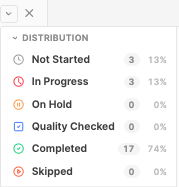
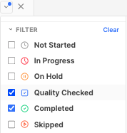
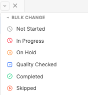
Property Editing
Switching to a separate form to enter properties breaks flow. The floating popover opens right next to the annotation, keeping context visible. The same popover renders any of the six property types:
- Hover or click the (i) icon on an annotation row to open the popover.
- Free Text — editable textarea for notes, Track IDs, transcriptions. Its Text Display mode controls presentation: Inline (default), Modal (a roomy verbatim plain-text modal), or Rich Text (a formatted rich-text modal).
- AI Text — auto-fill via wand icon, or manual edit if editing is enabled. Supports the same Text Display modes (Inline / Modal / Rich Text).
- Select — dropdown with configured options. When Allow Multi-Select is on, the popover renders a checkbox list; values are stored as a JSON array.
- AI Select — dropdown with predefined options, pre-selected by AI auto-fill. The model picks from the configured option list based on the annotation's image crop. Manual override is always possible; when Enable Editing is on, annotators can also tweak the prompt.
- Numeric — number input that respects the property's
min/max/stepbounds; the configuredunitis shown next to the field (e.g. "mm", "px"). Validation runs on blur; out-of-range values block save. - Approval — a pair of thumbs-up / thumbs-down icons rendered side-by-side in the popover and inside the property's table column. Click the thumb-up to mark Approved, the thumb-down to mark Disapproved; click the active thumb to clear the verdict, or click the opposite thumb to swap directly without a clear step. Inactive icons show as coloured outlines (green / red); the active state fills the icon. When the property is required-and-empty AND editable, the picker gets a thin red wrapper outline. View-only access (View-Only Roles on the property, or a view-only class) keeps the green/red palette but dims it and disables clicks, so the up-vs-down cue stays readable. Approval values are not text-searchable from the table search box (similar to comment-resolved booleans) — use the column filter instead, which lists fixed Approved / Disapproved / (Blank) options regardless of what's currently stored.
- Required indicator — red (i) icon until all required properties are filled. The same indicator drives the Object View per-cell red flag.
- Option visibility rules apply live: changing a controller value cascades through dependent dropdowns and clears now-invalid selections.
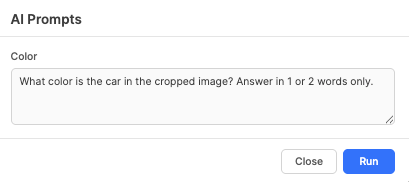
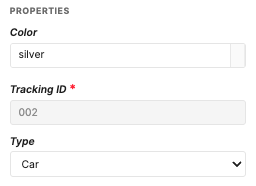
AI Property Auto-Fill
Many tasks require extracting text, descriptions, or classifications from image regions — transcribing documents, captioning objects, classifying attributes. The AI Text and AI Select property types automate this: a vision model reads the cropped annotation region (or, for image-scope tags, the whole image) and fills the property. The model is determined by the AI Property Proxy you've selected — OpenAI's gpt-5.4-nano, Gemini's gemini-2.5-flash, or Anthropic's claude-haiku-4-5. See OCR, Captioning, and Form Parsing for applications.
- Wand icon on annotation overlay — runs AI for all AI Text and AI Select properties instantly. Fastest path.
- Pencil icon — opens a modal with editable per-property prompts before running. Useful for prompt adjustments.
- System prompts are configured per property as the Default Prompt and can be overridden per-run.
- Property reference chips — when a prompt embeds references to sibling properties, they show as coloured chips: a blue chip (e.g. {Transcription}) resolves to that sibling's current value on the same annotation / tag row, and a red chip marks a broken reference whose property has been deleted. When Enable Editing is on, you can edit the prompt live in the pencil modal — type
{to insert more references, exactly as in configuration. - Blank or broken references skip extraction — if a property's prompt references a sibling that is still empty, or a deleted property (red chip), that property is not sent to the model: it's skipped with a warning toast naming what to fill, while the other properties in the run extract normally. Fill the referenced value (or fix the reference) and run again. This is why a property that references another AI property only completes on a second run — once its referenced sibling has a value.
- For AI Select, the model returns one (or more, if multi-select is enabled) option labels from the property's predefined list; unrecognised values are silently dropped.
- Requires AI Property Proxy configured (OpenAI / Gemini / Anthropic).
- For Rotated Box annotations the crop is rotation-aware — the source image is rotated around the box center so the model sees only the box's pixels, not a wider axis-aligned envelope.
- Image-scope tags with AI Text or AI Select properties send the entire frame as the input crop — useful for whole-image captions, scene tags, or quality assessments. Item-scope tags don't support AI Text or AI Select (no canonical "the image" exists).
- The same models also power the Ask AI assistant in this in-app documentation popup — both routes share one proxy.
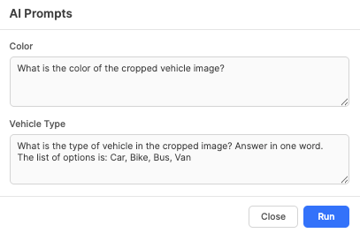
Text Display Modals (Modal & Rich Text)
Free Text and AI Text properties whose Text Display mode is set to Modal or Rich Text render as a compact pill in the popover / table cell; clicking it opens a full-page editor instead of editing inline. The same modals are reused for tag-level properties.
- Modal (plain text) — opens the same kind of full-page popup as the Rich Text modal, but with a plain editing area and no formatting toolbar. What you type is stored exactly as-is — whitespace, line breaks, and literal markup (raw HTML, JSON, code) are preserved verbatim, with no formatting or conversion applied. Use it for comfortable reading and editing of long or structured plain text.
- Rich Text — a formatting editor supporting bold, italics, headings, bulleted and numbered lists, blockquotes, inline code, code blocks, links, and tables. Sized for multi-paragraph content like detailed image captions, OCR transcriptions of long passages, or scene descriptions. Content round-trips through a formatted representation, so it is not intended for preserving arbitrary literal markup — use Modal for that.
Both modals offer a View only state for read-only roles and close on Save & Close, Cancel, or Esc.
Property & Option Visibility Rules
Configurations defined as property visibility rules and option visibility rules are evaluated and enforced live as the annotator works — there's no separate "validate" step, and the same logic applies in both the floating property popover and the table view.
Property Visibility Rules — apply to any property type
A property visibility rule can be set on any property type (Free Text, AI Text, Select, AI Select, Numeric, Approval — all of them). When the rule is unsatisfied for the current row, the whole field is treated as inaccessible:
- The field still renders in the popover and as a table column so annotators can see the field exists, but it's dimmed and read-only, with a not-allowed cursor and a hover tooltip explaining what controls it (e.g. "Controlled by: Material = Wood").
- Any stored value on that property is automatically cleared the moment the rule flips to unsatisfied — and the clear cascades, so if A controls B and B controls C, changing A can clear both B and C in a single step.
- Required validation is suppressed while the property is inaccessible — the red required indicator on the annotation / tag row only reactivates when the rule becomes satisfied again.
- AI extraction is skipped on AI Text / AI Select properties whose rule is unsatisfied. The wand icon on the canvas, the per-cell wand in the table, and the Extract / Edit-prompt buttons in the property popover all hide or grey out for these fields, and re-appear the instant the controller flips back — no popover reopen needed.
- Rich-text properties gated by an unsatisfied rule render as a plain "—" placeholder; the rich-text modal cannot be opened. Approval columns follow the same convention — an inaccessible approval cell collapses to "—" in the table (the popover still shows the dimmed thumbs picker, matching how every other field type is rendered in the popover for inaccessibility).
Option Visibility Rules — apply only to Select / AI Select
Select and AI Select properties additionally support per-option visibility rules. These don't hide the whole field — they filter the contents of the dropdown:
- Each option appears in the dropdown only when its own rule is satisfied by the current controller values on that same annotation / tag row. Options with no rule are always shown.
- If the annotator changes a controller value and a previously-selected option is no longer valid, the dropdown's stored value is cascade-cleared the same way property-level rules cascade — so the row never holds an option that can't be re-picked from the visible list.
- For AI Select, the model's pre-selection respects the same filtering — values the model returns that fail the active rules are silently dropped before being written to the row.
How the two layers combine on a Select / AI Select property
A Select / AI Select property can carry both kinds of rules at once: a property visibility rule on the field itself, and option visibility rules on one or more of its individual options. The editor evaluates them in a fixed order — property first, then options — so they can't contradict each other:
- The property rule runs first. If it is unsatisfied, the whole field is dimmed and read-only as described above; option rules on that field are never evaluated, because there is nothing to pick from while the field is inaccessible.
- If the property rule passes (or no property rule exists), the option rules filter what appears in the dropdown.
In short: the property rule decides whether the field is in play; the option rules then decide which choices are valid inside it. Cascade clearing covers both layers in one pass — a stored value can be cleared because the option it points to is no longer valid (option-rule failure) or because the whole property hosting it is no longer visible (property-rule failure). The chain icon on a property's editor label, and the small chain badge in the table column header, both surface the active rule's controller(s) on hover so annotators can quickly see why a field is dimmed or why their list of options is narrower than expected.
SAM 3 (Segment Anything)
Manual annotation is the bottleneck in every labeling pipeline. SAM 3 converts a text description into detected annotations in seconds — shifting the annotator's role from drawing to reviewing. See SAM 3 + AI Workflow for the complete acceleration pattern.
- Type a prompt (e.g., "car", "tumor", "text line") in the toolbar field.
- Enter — annotate the current image.
- Annotate Range — click the multi-layer icon next to the send button to open a frame-range dropdown. A dual-range slider lets you pick the start and end frames; click Annotate to run SAM 3 only on that range. Defaults to the current frame through the last frame, so you can quickly annotate from "here to the end" or narrow it to a specific span.
- Only works with mask-type or bounding boxes classes selected.
- Threshold slider in Settings filters by confidence score.
- Requires Fal.ai Proxy configured. See rate limits.
- The single-image button, range button, and prompt visibility are each independently controlled by the Fal.ai Feature Toggles in Configuration.
- For dense or crowded scenes, use Region Based SAM 3 to run detection on a selected crop instead of the full image — fewer false positives and higher precision.
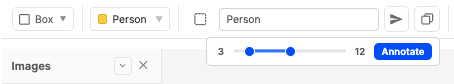
Region Based SAM 3
Standard SAM 3 processes the entire image — which works well for large, distinct objects. But when your target is small, crowded, or surrounded by similar objects, full-image detection often produces noisy results with many false positives. Region Based SAM 3 solves this by letting you select a specific area of the image and running AI detection only within that crop.
Why Region Based SAM 3 Matters
In dense scenes — a parking lot with 50 cars, a histopathology slide with thousands of cells, a document page with dozens of text blocks — full-image SAM 3 may detect hundreds of objects at once, many irrelevant. By selecting just the region of interest, you get focused, higher-quality predictions with far fewer false positives. This is especially powerful for iterative annotation: select a region, get predictions, move to the next region.
How to Use
- Select a box or mask class from the class dropdown. Region SAM 3 requires a compatible class type.
- Enter a text prompt in the SAM 3 prompt field (e.g., "cell", "car", "text line").
- Click the dashed-square icon between the class dropdown and the prompt field to activate Region SAM 3 mode. The icon turns blue when active.
- Draw a selection rectangle on the canvas by clicking and dragging — just like drawing a bounding box.
- The tool crops that region, sends it to the SAM 3 API with your text prompt, and remaps the returned annotations back to their correct positions on the full image.
- The icon stays selected — draw another region immediately for the next area.
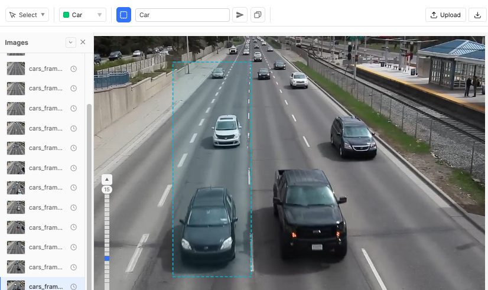
How Coordinate Remapping Works
The API returns annotations relative to the cropped region. The tool automatically converts these back to full-image coordinates:
- Bounding boxes — center and size are scaled by the region's position and dimensions.
- Masks — each pixel in the cropped mask is mapped to its corresponding position in the full image, producing a correctly positioned mask at full resolution.
SAM 3 threshold settings from Settings apply to Region SAM 3 results as well, filtering by confidence score.
Tracking
In multi-frame items, the same real-world object appears across frames. Without tracking, annotations are isolated — models cannot learn temporal consistency. Tracking links annotations via a shared ID, producing trajectory data for object trackers, 3D reconstruction, and motion analysis.
- Designate a Free Text property as Track ID in configuration.
- Auto-assigned IDs — when you create a new annotation on a class with a Track ID property, the tool automatically assigns the next available ID (e.g., "001", "002", "003") by scanning all existing annotations across all frames. You never need to manually type or guess IDs. The Track ID field is read-only in the property popover to prevent accidental edits.
- When selected, frames with the same Track ID highlight yellow in the image strip.
- Tracking Frames slider in Settings controls context range.
Tracking Icon & T Shortcut
When a trackable annotation is selected (class has a Track ID configured) and the current frame is not the last frame, a blue tracking icon (crosshair) appears at the center of the annotation's bounding box. This provides a one-click way to propagate annotations forward:
- Click the tracking icon or press T — copies the selected annotation(s) to the next frame. The tool automatically navigates to that frame so you can adjust the position. This is the fastest way to manually track objects frame-by-frame.
- Duplicate tracking IDs on the same frame are automatically detected and prevented — if an object with the same class and Track ID already exists on the target frame, it is skipped with a warning.
- The tracking icon is hidden on the last frame since there are no subsequent frames to copy to.
- Hover the tracking icon to see the tooltip "Shortcut: T".
Delete by Tracking ID
When a tracked object needs to be removed entirely — across all frames — deleting one annotation at a time is tedious. The delete-by-tracking-ID feature removes all annotations with the same tracking identity in a single action.
- When a selected annotation has a Track ID assigned, a red trash icon appears below the bottom-right corner of the annotation's bounding box.
- Click the trash icon → a confirmation dialog shows how many annotations across how many frames will be deleted (e.g., "Delete all 12 'Car' annotations with tracking ID 003 across 12 frames?").
- On confirmation, all matching annotations (same class + same Track ID) are removed from every frame. An undo snapshot is saved for each affected frame.
- A success toast confirms the deletion count.
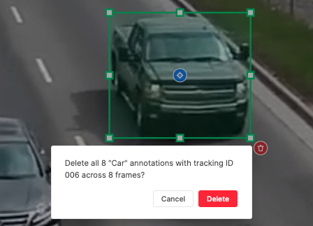
SAM 2 Tracking (AI-Powered)
Manually re-annotating the same object across dozens or hundreds of frames is the single biggest time sink in video and volumetric annotation. SAM 2 Tracking eliminates this bottleneck by using Meta's Segment Anything 2 model to automatically propagate an annotation from one frame to subsequent frames — turning minutes of repetitive work into a single click.
Why SAM 2 Tracking Matters
Consider a 100-frame video with 5 tracked objects. Without AI tracking, an annotator manually draws 500 annotations. With SAM 2, they draw 5 annotations on the first frame and click "Track" — the model propagates each across all remaining frames. The annotator's role shifts from drawing to reviewing and correcting, reducing annotation time by 10–50x depending on object complexity.
How It Works
SAM 2 Tracking is available for bounding box and mask annotations that have a Track ID configured. When a trackable annotation is selected (and it is not on the last frame), a tracking popup appears at the top center of the canvas.
The SAM 2 Tracking Popup
- Frames slider — controls how many subsequent frames to track into (1 to the number of remaining frames). The tool remembers your last selection for convenience.
- Positive (+) / Negative (−) point prompts — optional refinement. Click + to place green points on the object (foreground areas the model should track), or − to place red points on background areas the model should avoid. Points improve accuracy for ambiguous objects — e.g., distinguishing overlapping items, or guiding the model when object boundaries are unclear.
- Track button — sends the annotation and optional points to the SAM 2 API. The button shows "Tracking…" while processing.
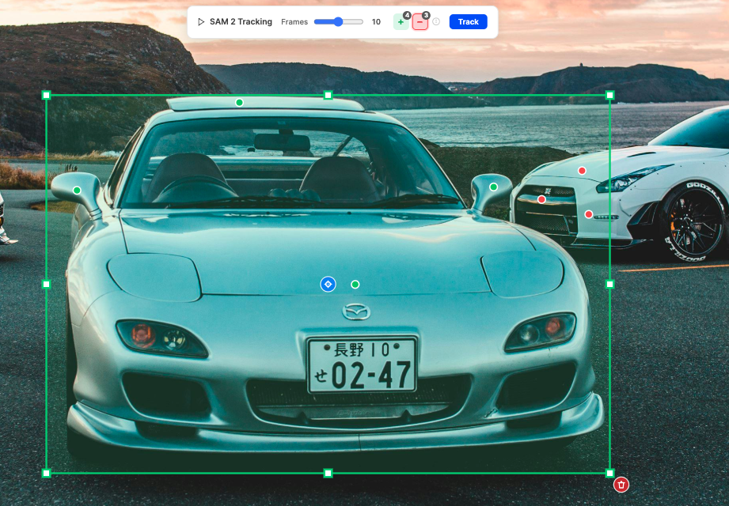
Box Tracking
For bounding box annotations, the tool converts the surrounding frames into a video, sends it with the box coordinates to the fal.ai SAM 2 video API, and receives a mask video in response. The tool then extracts bounding boxes from each frame by finding the extent of non-background pixels — producing accurate tracked boxes even as the object moves, scales, and rotates.
Mask Tracking
For mask annotations, the same API call returns a video where foreground pixels represent the tracked mask. The tool extracts these pixels frame by frame, applies morphological opening and closing (3×3 kernel) to clean noise and fill small gaps, then converts each cleaned mask to RLE format. This produces smooth, artifact-free segmentation masks across frames — critical for medical imaging and precise segmentation tasks.
Point Prompts for Better Accuracy
When tracking challenging objects (partially occluded, similar to background, or very small), point prompts significantly improve accuracy:
- Green (+) points — place on the object you want to track. Tells the model "this area is foreground."
- Red (−) points — place on nearby distractors or background. Tells the model "this area is NOT the object."
- Points are ephemeral — they are used only for the current tracking run and cleared afterward.
- Hover the (i) icon in the popup for a quick usage guide.
Multi-Object Tracking
SAM 2 Tracking supports tracking up to 10 objects simultaneously. Instead of tracking each annotation one by one, select multiple trackable annotations on the same frame and track them all in a single operation — the tool fires parallel API calls and applies all results at once.
- Select 2–10 trackable annotations (bounding boxes, masks, or a mix) on the current frame. The SAM 2 popup appears with the title showing how many objects will be tracked (e.g., "SAM 2 Tracking (3 objects)").
- Adjust the Frames slider — the frame count applies to all selected objects equally.
- Click Track — the tool builds the video once (the most expensive step), then sends parallel API requests for each object with its own bounding box prompt. All responses are collected before any results are applied to the canvas.
- Results are applied atomically — undo snapshots are saved per target frame (not per object), so a single undo reverts all tracked objects on that frame.
- Tracked frames in the image strip highlight yellow for all selected tracking IDs.
Point prompts (+/−) are automatically disabled during multi-object tracking since they are per-object and would be ambiguous when multiple objects are selected. If you need point-prompt precision for a specific object, track it individually.
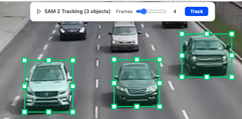
Requirements
- Fal.ai Proxy configured.
- The SAM 2 Tracking feature toggle must be enabled (it is by default).
- The annotation's class must have a Track ID property configured.
- The annotation must be on a frame that is not the last frame (there must be subsequent frames to track into).
- Works with both bounding box and mask annotation types.
Split View
When annotating multi-frame items — video sequences, medical scan slices, multi-camera views — you often need to compare frames side by side or get an overview of all frames at once. Split View transforms the single-image canvas into a multi-column grid, showing multiple frames simultaneously.
Why Split View Matters
In a 50-frame video annotation task, navigating frame by frame with ↑/↓ gives you no context about the broader sequence. Split View lets you see 2, 3, or 4 frames at once — spot annotation gaps, verify tracking consistency, and identify which frames need attention, all without navigating away from the editor.
How to Use
- The Split toggle appears in the top toolbar (between the download button and shortcuts) whenever an item has more than one image frame.
- Select a column count (0–4): 0 returns to normal single-image view, 2–4 show a grid of that many columns.
- Each cell shows a thumbnail with an annotation overlay canvas and a label with the frame name and status.
- Click any cell to return to normal view focused on that frame — for quick navigation to a specific image.
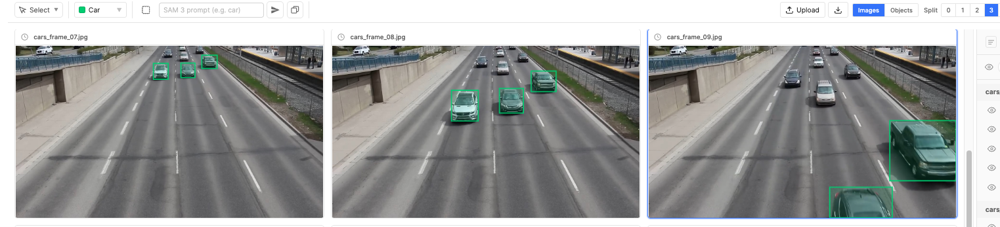
Object View
Object View is a per-annotation inspection mode that displays each annotation instance as an individual cell in a grid, zoomed in to show just that object. While Split View shows full image frames side by side, Object View focuses on individual annotations — ideal for class verification, QA review, and property inspection. Object View shows annotations from all frames, not just the current image.
How to Activate
- The Images / Objects toggle appears in the top toolbar between the download button and the Split toggle whenever multiple images are loaded.
- Click "Objects" to switch to Object View. The split column count automatically changes to 4.
- In Object View, split options 0 and 1 are disabled — only 2, 3, and 4 columns are available.
- Click "Images" to return to the normal single-image canvas (split resets to 0).
- Target icon (◎) in annotation panel — click the target icon on any annotation row in the right panel to jump directly into Object View focused on that object. See Annotation Ordering.
Cell Layout
- Each cell shows the source image cropped and zoomed to the annotation's bounding box (with padding), similar to how Tab/Shift+Tab zooms to individual annotations.
- The annotation overlay (fill + stroke) is drawn on top using the class color.
- All annotation types are supported: bounding boxes, polygons, polylines, masks, keypoints, rotated boxes, and cuboids.
Cell Header
Each cell has a header bar with the following elements:
- Class dropdown — a rich dropdown with search, matching the editor toolbar's class selector. Only shows classes with the same tool type. Sized to at most half the cell width.
- Property info icon {i} — appears when the class has properties configured. Hover to see the property popover. Turns red when a required property is missing.
- Frame icon (top-right) — hover to see which frame/image the annotation belongs to.
- Target icon ◎ (top-right) — click to exit Object View, navigate to the annotation's frame, and zoom in on the object in the main canvas (same as Tab zoom behavior).
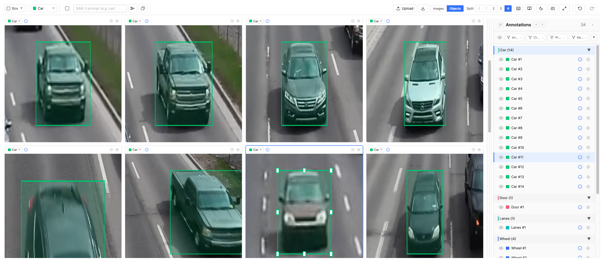
Cell Ordering & Grouping
Cells appear in the same order as annotations in the right panel, which means the Group By setting directly controls how Object View is organized:
- Group by Class — all "Car" annotations appear together, then all "Person", etc. Ideal for verifying class consistency across frames.
- Group by Image — annotations grouped by frame. See all objects from one frame, then the next.
- Group by Property (e.g., Track ID) — annotations with the same tracking ID appear side by side across different frames. This lets you visually verify that the same real-world object is consistently annotated across a video sequence.
- Group by Status — see objects from completed frames vs. in-progress frames.
If you reorder annotations via Move to Foreground / Background, the Object View grid reflects the new order. Annotation panel filters (class, property, image) also apply — hidden or filtered-out instances are excluded.
Selection Sync
Click any cell to select that annotation. Selection is bidirectional: selecting a row in the annotation panel highlights the corresponding Object View cell and scrolls it into view, and vice versa. Tab/Shift+Tab navigation also syncs.
Interactive Editing
When a single cell is selected, draggable handles appear on the annotation — identical to the main editor's editing controls. You can drag vertex points, resize handles, or keypoints directly within the Object View cell. This works for all annotation types except masks (which require the brush tool):
- Bounding Box — 8 resize handles (4 corners + 4 midpoints)
- Polygon / Polyline — Draggable vertex circles at each point
- Keypoint — Draggable keypoint circles
- Rotated Box — 8 resize handles aligned with the rotated edges, plus a curved-arrow rotation handle on the top edge
- Cuboid — 8 square corner handles plus a round depth handle (back-face center) and top handle (top-face center) for translating those subsets independently
Annotation Ordering
Annotations render in a specific order — earlier annotations appear behind later ones on the canvas. When annotations overlap, controlling this order determines which annotation is visually on top and which is behind. The ordering system also affects the order of cells in Object View and the order of rows in the annotation panel.
Foreground & Background
Right-click on one or more selected annotations to open the context menu. On the right side of the "Change Class" section, two arrow icons control ordering:
- ↑ Move to Foreground — moves selected annotations to the front (rendered last, visually on top)
- ↓ Move to Background — moves selected annotations to the back (rendered first, visually behind everything else)
Ordering changes are reflected everywhere: the canvas rendering order, the annotation panel row order, and Object View cell order.
Navigation Icons
Each annotation row in the right panel has a target icon (◎) on the right side. Clicking it opens Object View at 4 columns, scrolled to that annotation's cell. This provides a quick way to jump from a specific annotation to its zoomed-in Object View representation. Conversely, each Object View cell has a target icon in its header that exits Object View and zooms to that object on the main canvas.
Settings
The Settings popup (gear icon in the toolbar) consolidates image adjustments, AI thresholds, display options, and rendering controls into one accessible panel. It opens as a dropdown from the toolbar.
- Brightness, Contrast, Hue, Saturation — sliders (0–200%, defaults at 100%) with a Reset button to restore defaults. Adjust to reveal details in low-contrast medical scans or dark surveillance footage — improving label accuracy without altering the source image.
- SAM 3 Threshold — dual-range sliders (min/max, 0–100%) that filter SAM 3 predictions by confidence score. Also applies to Region SAM 3.
- Shape Opacity — slider (0–255, default 32) controlling the fill opacity of bounding box and polygon overlays. Lower values make shapes more transparent so the underlying image is visible; higher values make annotations more prominent. Useful for dense annotation tasks where overlapping shapes need distinct visibility.
- Keypoint Size — slider (2–10, default 5) controlling the visual radius of keypoint dots only (corner/vertex handles on boxes and polygons are unaffected). Saved per user in browser local storage rather than the project config so each annotator can pick a comfortable size; the hit/select area scales up with larger sizes but never shrinks below the default for small sizes, keeping small points easy to click. The Reset button also clears this preference.
- Show Classes / Properties / Keypoints — overlay toggles that display class names, property values, or keypoint labels directly on annotations. Essential for QA review.
- Image Dark Mode — inverts the luminance channel (L in CIELAB color space) of the displayed image while preserving colors. Transforms bright backgrounds to dark and vice versa, making it easier to annotate on images with extreme brightness. The inversion maps L values to the 10–90 range for comfortable contrast. This is a display-only adjustment — it does not modify the source image or exported data.

Comments
When Object Comments is on, every annotation gains a thread for collaboration: questions during ambiguous cases, QA notes, hand-offs between annotators and reviewers. Comments are scoped to the annotation, not the image, so the discussion stays anchored to what it's about.
- Hover an annotation row in the annotation panel or click the speech-bubble icon to open the comments thread.
- The thread shows author, role, timestamp, and the comment text. Each comment can be marked resolved (struck through, dimmed) or unresolved.
- Resolve / Unresolve and Delete are gated by the role lists configured under Feature Control → Object Comments. Annotators outside those role lists can post comments but can't change others'.
- The Table View exposes a Comments column showing thread length, resolved count, and unresolved count — fast triage for review queues.
- Comments persist on export under
instance.commentswithid,authorEmail,authorName,text,resolved,createdAt.
Relationships
Some labels are richer than "what is this object?" — they're "how does this object relate to that one?". Relationships record directed links between annotations using the relationship taxonomy the admin defines under Feature Control → Instance Relationships.
- From an annotation's overflow menu (or the panel context menu), pick Add relationship, choose a relationship type (e.g. parent-of, previous, same-as), then click the target annotation on the canvas or in the panel.
- Each relationship type can be hidden from or set view-only for specific roles in the configuration — useful when only QA leads should see derived links.
- The Table View renders one column per relationship type, listing the linked annotation(s) per row.
- Use cases: linking a "Field Label" bbox to its "Field Value" in form parsing, threading the same physical object across timesteps in a video, building parent-of trees over hierarchical layouts.
- Relationships persist on export under
instance.relationshipsas{ relationshipTypeId: targetInstanceId }.
Class Changes
Reclassifying an annotation is the most common refinement action — a "Vehicle" turns out to be a "Truck", a "Person" should have been "Pedestrian". Right-click any selected annotation (or use the panel row's overflow menu) → Change Class → pick the new class.
- The new class must share the same tool type as the original — a Bounding Box can become any other Bounding Box class, but not a Polygon (the underlying geometry differs). The dropdown only lists same-type classes.
- Multi-select: select several annotations of the same tool type and reclassify all in one action.
- Properties whose IDs match between the old and new class are preserved; properties unique to the old class are dropped, properties unique to the new class start empty.
- To convert across tool types (e.g. Bounding Box → Polygon), delete the original and redraw it under the new class.
Annotation Isolation
When Annotation Isolation = By User is set in Access Control, the editor filters every annotation, tag, and comment by createdBy.email: each user only sees their own work. This is essential for blind multi-annotation workflows where consensus or inter-annotator agreement is computed downstream — without isolation, late annotators would be biased by what early annotators drew.
- Hidden annotations remain in storage; they're just not rendered on the canvas, in the panel, or in the table.
- Roles on the Bypass Isolation list see everyone's work — typically QA leads and project owners reviewing across annotators.
- Counters in the annotation panel and the frame status distribution reflect the isolated view, so progress numbers always match what the user actually sees.
Tags under isolation
System-generated tags (item-scope and image-scope) participate in isolation alongside instances, but with a few rules of their own:
- Lazy creator stamping (ON and OFF) — tag rows are rendered in the panel as soon as an item is opened, but no
createdBy/createdAtis written to the JSON until the user makes their first JSON change anywhere in the item. That first change synchronously stamps every visible placeholder with the current viewer's email, role, and timestamp. An item that's only been viewed produces zero tag rows in the saved JSON and downloads. - Isolation ON — one row per user, per scope — the system auto-generates one tag row per user per visible tag class, on each scope (item-scope or image-scope), excluding admins (role id
3). Two annotators opening the same item end up with two independent rows for each tag class — each can edit their own row's properties and comments without seeing the other's, and a bypass reviewer sees all rows side by side. Re-opening an item where the user already has a row never creates a duplicate. - Mid-project rollback — if isolation is turned off after items have already accumulated multi-user copies, all existing copies stay intact. New users opening those items don't get a fresh copy; they edit whichever row already exists for the class. Brand-new items opened after the rollback follow the OFF rule (one row per class).
- Admins leave no footprint on passive view — admins never trigger tag materialization or stamping on open. An admin only becomes a tag's
createdByif they actively create a row that didn't exist yet (no row for their email under iso ON, or no row at all under iso OFF). Admin edits to a tag created by someone else preserve the original creator and only land the property / comment change. - Creator chips and table columns extend to tags — the bypass-mode creator-chip filter buckets tag rows by their stamped creator just like it buckets instances. The Created By, Creator Role, and Created At columns in the panel's table view populate for tag rows once stamped, and they're searchable / filterable.
- Deletion stays locked — tags are system artefacts and cannot be deleted by any role, including bypass viewers. Bypass viewers can read and edit other users' tag properties and comments; non-bypass viewers only ever see their own rows.
Zoom, Pan & Navigation
Annotation accuracy depends on seeing fine details. Zoom gives pixel-level inspection; auto-zoom on Tab navigation ensures every annotation gets full-resolution attention during review.
- Zoom: scroll wheel toward cursor (0.2x – 3x).
- Pan: right-drag, Alt(⌥)+left-drag, or middle-drag.
- Fit-to-view on image load and window resize.
Undo / Redo & Copy / Paste
Undo stacks are per-image (50 levels) — changes to frame 5 don't affect frame 3's history. Copy/paste works across frames.
Import / Export
JSONL Import Format
Teams with existing datasets need to load pre-organized images programmatically. JSONL (one JSON object per line) is the standard import format — each line becomes one item in the project, optionally pre-loaded with images and annotations. Data engineers prepare datasets; annotators open them ready to work.
Schema
Minimum required keys: metadata.name and data.image_annotation_tool.value.images with at least one entry. Each image entry must have a name and a url (or, for editor-uploaded frames, an uploadedFile block — see below). Everything else — urlKind, instances, tags, status, itemTags — is optional and can be added incrementally.
{
"metadata": { "name": "item_name" },
"data": {
"image_annotation_tool": {
"value": {
"images": [
{
"name": "frame1",
"url": "https://example.com/img1.jpg",
"urlKind": "public"
},
{
"name": "frame2",
"url": "s3://bucket/integrations/img2.jpg",
"urlKind": "integration",
"instances": [
{
"id": "inst-1",
"classId": "class-abc123",
"type": "bbox",
"bbox": { "x": 0.1, "y": 0.2, "width": 0.3, "height": 0.4 },
"propertyValues": { "prop-xyz": "some value" }
}
],
"tags": [
{ "id": "tag-1", "tagClassId": "tag-class-quality",
"propertyValues": { "prop-rating": "Good" } }
],
"status": "completed"
}
],
"itemTags": [
{ "id": "tag-2", "tagClassId": "tag-class-split",
"propertyValues": { "prop-set": "train" } }
]
}
}
}
}
Image URL Kinds
Every image carries a url; how the editor resolves it depends on the optional urlKind field. Five kinds are supported, mirroring the SuperAnnotate platform's URL classifier:
| urlKind | Meaning | Resolution |
|---|---|---|
public | External public URL | Used as-is, never signed. |
presigned | Already-signed URL (AWS / GCS / Azure) | Used as-is. Set expiresAt (epoch ms) if known so the editor can warn about TTL. |
integration | Private path in an integration-linked bucket | Signed by SuperAnnotate using the current item's integration_id. |
asset | Path inside the current item's storage | Signed via SuperAnnotate's signUrls primitive. |
uploaded | File uploaded via SuperAnnotate (paired with uploadedFile metadata) | Resolved through SaSdk.getFileUrl. url can be empty for these — only uploadedFile.uniqueName is required. |
If you omit urlKind, the editor classifies the URL automatically: blob: / data: URLs become public; URLs with cloud-provider signature query params (AWS SigV4, GCS, Azure SAS) become presigned; everything else falls back to asset, which is routed through SuperAnnotate's signing path.
asset and signed — this is the same code path as integration URLs. If you are providing genuinely public URLs (e.g. https://upload.wikimedia.org/...) you must set "urlKind": "public" explicitly, otherwise the signing step will fail and the image will not load. The same applies to presigned URLs whose signature parameters don't match the well-known patterns.Uploaded Files
For images the user has uploaded inside the editor (or via SuperAnnotate's upload pipeline), the frame carries an uploadedFile block alongside urlKind: "uploaded":
{
"name": "captured.jpg",
"url": "",
"urlKind": "uploaded",
"uploadedFile": {
"uniqueName": "abc123-captured.jpg",
"fileName": "captured.jpg",
"fileType": "image/jpeg"
},
"manualUpload": true,
"instances": [ /* … */ ]
}
uniqueNameis the platform-side identifier the editor uses to fetch the bytes.manualUpload: truemarks frames that the annotator added in-editor (vs. JSONL-supplied), so QA tools can distinguish them.
Key Details
- Each image frame:
name(display label),url+ optionalurlKind(see above), optionaluploadedFile, optionalinstances, optional per-frametags(image-scope tag values), and optionalstatus(one of the frame statuses). - itemTags at the value root carry item-scope tag values shared across the whole item.
- itemContext at the value root carries Item Context values as a map of
{ slotId: string }— see Item Context for the shape and the orphan-key rules. - Instance fields:
id,classId(references a class ID),type, shape data (bbox,points,mask,keypoints,obbox,cuboid),propertyValues(keys are property IDs), optionalcomments,relationships,createdBy,createdAt. See Annotation Format Reference for exact shapes. - Coordinates are normalized 0–1 relative to image dimensions (except mask sizes which are in absolute pixels).
- One JSONL line = one item with N frames. See Image Management.
- Use the exported name2id.json as a reference to map human-readable names to the IDs your JSONL needs.
Source Files (Video / PDF / DICOM / NIfTI)
Pre-cutting a video, PDF, DICOM series, or NIfTI volume into individual frames and uploading each one is tedious. Instead of populating images[] by hand, JSONL authors can declare one or more source files at the value root — the editor downloads each source on first open, extracts frames the same way the in-editor upload modal does, uploads each extracted frame to the item's storage, and persists the result back into the item. The original source URL is preserved in the item value so you can see what each item was built from.
Minimal video example (1 fps default, single source):
{
"metadata": { "name": "drive_clip_001" },
"data": {
"image_annotation_tool": {
"value": {
"sources": [
{
"url": "https://example.com/clip.mp4",
"urlKind": "public"
}
]
}
}
}
}
Mixed sources + multiple format types (PDF + DICOM + video at 5 fps), all in one item:
{
"metadata": { "name": "ops_review_007" },
"data": {
"image_annotation_tool": {
"value": {
"sources": [
{ "url": "s3://docs/contract.pdf", "urlKind": "integration" },
{ "url": "s3://scans/series-04.dcm", "urlKind": "asset" },
{ "url": "https://cdn.example.com/clip.mp4",
"urlKind": "public", "fps": 5 }
]
}
}
}
}
Sources can also be combined with a pre-existing images[] array — extracted frames are appended after any frames you supply directly:
{
"metadata": { "name": "pre_seeded_then_video" },
"data": {
"image_annotation_tool": {
"value": {
"images": [
{ "name": "intro_slide", "url": "https://example.com/title.jpg", "urlKind": "public" }
],
"sources": [
{ "url": "https://example.com/walkthrough.mp4", "urlKind": "public", "fps": 2 }
]
}
}
}
}
Source Schema
| Field | Type | Required | Notes |
|---|---|---|---|
url | string | Yes | Pointer to the file. Format is auto-detected from the response's Content-Type header first, then falls back to the URL extension. |
urlKind | string | No | One of "public", "presigned", "asset", "integration" — same semantics as image URL kinds, except "uploaded" is intentionally excluded (sources are always remote files). If omitted, the editor classifies the URL the same way it does for images: cloud-signed URLs become presigned, plain URLs fall back to asset. |
fps | number | No | Video only. Frames per second to extract. Defaults to 1. Total extracted frames are capped at 1000 per video file regardless of fps × duration. |
processed | boolean | No (set by editor) | The editor flips this to true after frames have been extracted and queued for upload, then persists the value back to the item. Subsequent opens see "processed": true and skip the source — extraction is a one-shot operation per source per item. |
The schema does not have integration id as it is item-level (signing uses the item's integration_id defined during JSONL upload), the format is auto-detected, and the file's own name is read from the response when fetching.
Supported Formats
| Format | Detection | Frame extraction |
|---|---|---|
application/pdf · .pdf | One frame per page (no cap). Renders via pdfjs-dist with WASM decoders for JBIG2 / JPEG2000 / colour profiles. | |
| Video | video/* · .mp4 .mov .webm .mkv .avi | Frames sampled at the configured fps. Capped at 1000 per file. |
| DICOM | application/dicom · .dcm .dicom | One frame per slice (no cap). |
| NIfTI | application/octet-stream + extension · .nii .nii.gz | One frame per slice (no cap), greyscale-normalised. |
Any other format (audio, individual images, archives, raw text, etc.) is rejected with a persistent error toast — for individual images, populate images[] directly instead.
Processing Behavior
- Sequential per item. Sources are processed one at a time in the order they appear in the JSONL. While processing is active, the editor shows a persistent banner — "Processing source 1/3…" when there's more than one, or simply "Processing source…" for a single source. This banner mirrors the existing in-editor video / PDF / DICOM upload toast so users see the same UX whether the file came from JSONL or from a manual upload.
- Frame naming. Extracted frames are named
<base>_<NNNNN>.jpgwith a 5-digit zero-padded index (e.g.clip_00001.jpg,clip_00002.jpg, …). The same convention is used across PDF / video / DICOM / NIfTI — downstream tooling sees one consistent naming scheme. - Frames are uploaded as the item's own assets through the same upload pool used by manual uploads, so per-frame retries / progress / error styling all carry over. Once uploaded, frames behave identically to
"urlKind": "uploaded"entries from manual uploads. - Retries. Fetch and extraction failures are retried up to 2 times in the same session. After the third failure (or for unsupported formats) a persistent error toast appears — "Source might be invalid or inaccessible — please contact your admin." — and the source is left with
"processed": false. - One-shot processing. Once frames are extracted and appended, the source is marked
"processed": trueand persisted back to the item value. If individual frame uploads fail later, those failures are tracked per-frame (the source itself stays processed). This matches the in-editor upload behaviour where partial upload failures don't trigger re-extraction. To force re-processing, manually edit the JSONL to remove"processed": true(or remove the source entry and add it again). - Source URL is preserved. The full
sourcesarray — includingprocessedflags — appears in both the live download preview and the downloadedannotations.json/annotations.jsonl, so re-imports preserve the lineage.
fps over increasing the cap. The 1000-frame ceiling exists because per-frame upload + per-frame editor state has measurable cost; downsampling a 10-minute clip to 1 fps gives you 600 frames covering the full duration, which is almost always more useful than the first 1000 frames at 5 fps.Annotation Format Reference
When building JSONL imports or processing exported data, you need to know the exact shape of each annotation type. All coordinates are normalized to 0–1 relative to image dimensions — this makes annotations resolution-independent and portable across different image sizes.
Common Fields (All Types)
Every annotation instance shares these fields:
{
"id": "inst-1710000000-abc1234",
"classId": "class-abc123",
"type": "bbox | polygon | polyline | mask | keypoint | obbox | cuboid",
"propertyValues": {
"prop-xyz789": "some value"
}
}
| Field | Type | Description |
|---|---|---|
id | string | Unique instance identifier. Auto-generated during annotation; supply your own when importing. |
classId | string | References a class ID from the configuration. Use name2id.json to find the right ID. |
type | string | Must match the class's annotation type: "bbox", "polygon", "polyline", "mask", "keypoint", "obbox", or "cuboid". |
propertyValues | object (optional) | Key-value pairs where keys are property IDs and values are strings. Omit if no properties are configured. |
Bounding Box
The simplest format — a rectangle defined by its top-left corner and dimensions. Used by the Bounding Box tool and by SAM 3 when a non-mask class is selected.
{
"id": "inst-1",
"classId": "class-abc123",
"type": "bbox",
"bbox": {
"x": 0.15,
"y": 0.20,
"width": 0.30,
"height": 0.25
}
}
| Field | Type | Description |
|---|---|---|
x | number (0–1) | Left edge, normalized to image width |
y | number (0–1) | Top edge, normalized to image height |
width | number (0–1) | Box width, normalized. Must be > 0 |
height | number (0–1) | Box height, normalized. Must be > 0 |
x: 0.15, y: 0.20 means the box starts at pixel (288, 216). width: 0.30, height: 0.25 means the box is 576×270 pixels.Polygon
An ordered array of vertices forming a closed shape. Used by the Polygon tool (including Polygon Subtract and Polygon Clip modes). Minimum 3 points. The shape is automatically closed (last point connects to first).
{
"id": "inst-2",
"classId": "class-def456",
"type": "polygon",
"points": [
{ "x": 0.10, "y": 0.20 },
{ "x": 0.40, "y": 0.15 },
{ "x": 0.45, "y": 0.50 },
{ "x": 0.12, "y": 0.48 }
]
}
| Field | Type | Description |
|---|---|---|
points | array | Ordered vertices. Each point: { x, y } normalized 0–1. Minimum 3 points. |
Polyline
An ordered array of vertices forming an open path (not closed). Used by the Polyline tool for linear features like lanes, cracks, or contours. Minimum 2 points.
{
"id": "inst-3",
"classId": "class-ghi789",
"type": "polyline",
"points": [
{ "x": 0.05, "y": 0.80 },
{ "x": 0.30, "y": 0.60 },
{ "x": 0.70, "y": 0.65 },
{ "x": 0.95, "y": 0.45 }
]
}
| Field | Type | Description |
|---|---|---|
points | array | Ordered vertices. Same { x, y } format as polygon. Minimum 2 points. Not closed — first and last points are not connected. |
Mask (RLE)
Pixel-level segmentation stored as Run-Length Encoding (RLE). Used by the Mask tool and by SAM 3 when a mask-type class is selected.
What is RLE?
Run-Length Encoding is a lossless compression for binary masks. Instead of storing every pixel (0 or 1), RLE stores alternating run lengths: "skip N pixels, fill M pixels, skip K pixels, …" The counts array alternates between background runs (0-pixels) and foreground runs (1-pixels), starting with background. Pixels are read in column-major (Fortran) order — top to bottom, then left to right.
{
"id": "inst-4",
"classId": "class-jkl012",
"type": "mask",
"mask": {
"counts": [45, 12, 88, 15, 120, 20, ...],
"size": [1080, 1920]
}
}
| Field | Type | Description |
|---|---|---|
counts | number[] | Alternating run lengths: [background, foreground, background, foreground, …]. All values ≥ 0. Total must equal size[0] × size[1]. |
size | [number, number] | [height, width] in pixels. Defines the resolution of the mask grid. |
size is in absolute pixels matching the source image dimensions. The counts are raw pixel counts, not normalized. See Mask Data Size for performance considerations with large images.RLE Example
For a tiny 4×3 image (height=3, width=4, 12 pixels total) with a 2×2 foreground block in the middle:
Pixel grid (row-major view): Column-major flat order:
0 0 0 0 col0: 0,0,0 col1: 0,1,1 col2: 0,1,1 col3: 0,0,0
0 1 1 0 → [0,0,0, 0,1,1, 0,1,1, 0,0,0]
0 1 1 0 → counts: [4, 2, 1, 2, 3]
(4 bg, 2 fg, 1 bg, 2 fg, 3 bg)
mask: { "counts": [4, 2, 1, 2, 3], "size": [3, 4] }
Keypoint
An array of named landmark points, each referencing a point ID from the skeleton configuration. Used by the Keypoint tool. Point IDs define which skeleton landmark each coordinate represents; the skeleton's connections determine how they are visually linked.
{
"id": "inst-5",
"classId": "class-mno345",
"type": "keypoint",
"keypoints": [
{ "pointId": "pt-1", "x": 0.50, "y": 0.10 },
{ "pointId": "pt-2", "x": 0.48, "y": 0.22 },
{ "pointId": "pt-3", "x": 0.40, "y": 0.25 },
{ "pointId": "pt-4", "x": 0.60, "y": 0.25 }
]
}
| Field | Type | Description |
|---|---|---|
keypoints | array | Array of landmark points. Minimum 1. |
pointId | string | References a point ID from the class's skeleton definition. Use name2id.json keypointIds to find IDs. |
x | number (0–1) | Horizontal position, normalized to image width |
y | number (0–1) | Vertical position, normalized to image height |
Rotated Box
A center-anchored rectangle with a rotation angle. Used by the Rotated Box tool when an axis-aligned bbox would waste space on objects at an angle (aerial vehicles, oriented text, tilted documents). All coordinates are normalized 0–1.
{
"id": "inst-7",
"classId": "class-pqr678",
"type": "obbox",
"obbox": {
"cx": 0.50,
"cy": 0.40,
"width": 0.30,
"height": 0.18,
"rotation": 0.5236
}
}
| Field | Type | Description |
|---|---|---|
cx | number (0–1) | Center X, normalized to image width. |
cy | number (0–1) | Center Y, normalized to image height. |
width | number (0–1) | Extent along the box's local +x axis (the edge defined by the first two clicks during drawing). Must be > 0. |
height | number (0–1) | Extent along the box's local +y axis. Must be > 0. |
rotation | number | Rotation in radians, normalized to [-π, π). The angle of the box's local +x axis from image +x, measured in pixel coordinates so the rectangle stays a true rectangle on screen regardless of image aspect ratio. 0 means an axis-aligned rectangle. |
cx, cy, width, height, rotation keeps the local frame well-defined even when the rectangle is far from axis-aligned, and makes resize/rotate math (which all happens in the box's local frame) straightforward. To recover the four corners, rotate (±width/2, ±height/2) in pixel coordinates by rotation around (cx, cy).Cuboid
A 3D bounding box defined by eight 2D points in normalized image coordinates — four for the front face and four for the back face. The eight points let the cuboid match an object's actual perspective rather than being limited to two parallel axis-aligned rectangles. The connecting edges between corresponding front and back corners (0↔4, 1↔5, 2↔6, 3↔7) are rendered automatically.
{
"id": "inst-6",
"classId": "class-vehicle3d",
"type": "cuboid",
"cuboid": {
"points": [
{ "x": 0.20, "y": 0.60 }, // 0 front bottom-left
{ "x": 0.50, "y": 0.60 }, // 1 front bottom-right
{ "x": 0.50, "y": 0.25 }, // 2 front top-right
{ "x": 0.20, "y": 0.25 }, // 3 front top-left
{ "x": 0.30, "y": 0.55 }, // 4 back bottom-left
{ "x": 0.60, "y": 0.55 }, // 5 back bottom-right
{ "x": 0.60, "y": 0.20 }, // 6 back top-right
{ "x": 0.30, "y": 0.20 } // 7 back top-left
]
}
}
| Field | Type | Description |
|---|---|---|
cuboid | object | Contains the eight points of the cuboid. |
cuboid.points | Point[8] | Exactly eight { x, y } points (normalized 0–1). Indices 0–3 are the four front-face corners; 4–7 are the four back-face corners. Within each face: bottom-left → bottom-right → top-right → top-left. |
p0), front-bottom-end (→ p1), depth point (→ p5), and a height click that defines the height vector applied to the four bottom points to derive the four top points (p2, p3, p6, p7). The fourth-click's x is locked to the depth point's x at draw time so the side faces stay parallel.Full Instance Example (All Types)
A complete instances array containing one annotation of each type within a single image frame:
{
"name": "sample_image",
"url": "https://example.com/image.jpg",
"instances": [
{
"id": "inst-bbox-1",
"classId": "class-car",
"type": "bbox",
"bbox": { "x": 0.1, "y": 0.3, "width": 0.2, "height": 0.15 },
"propertyValues": { "prop-color": "red" }
},
{
"id": "inst-poly-1",
"classId": "class-road",
"type": "polygon",
"points": [
{ "x": 0.0, "y": 0.8 }, { "x": 0.5, "y": 0.6 },
{ "x": 1.0, "y": 0.75 }, { "x": 1.0, "y": 1.0 },
{ "x": 0.0, "y": 1.0 }
]
},
{
"id": "inst-line-1",
"classId": "class-lane",
"type": "polyline",
"points": [
{ "x": 0.3, "y": 1.0 }, { "x": 0.45, "y": 0.6 },
{ "x": 0.48, "y": 0.4 }
]
},
{
"id": "inst-mask-1",
"classId": "class-sky",
"type": "mask",
"mask": { "counts": [0, 518400, 1555200], "size": [1080, 1920] }
},
{
"id": "inst-kp-1",
"classId": "class-person",
"type": "keypoint",
"keypoints": [
{ "pointId": "pt-head", "x": 0.5, "y": 0.1 },
{ "pointId": "pt-neck", "x": 0.5, "y": 0.18 },
{ "pointId": "pt-l-shoulder", "x": 0.42, "y": 0.22 },
{ "pointId": "pt-r-shoulder", "x": 0.58, "y": 0.22 }
]
},
{
"id": "inst-obbox-1",
"classId": "class-aerial-car",
"type": "obbox",
"obbox": {
"cx": 0.72, "cy": 0.55,
"width": 0.18, "height": 0.08,
"rotation": 0.5236
}
},
{
"id": "inst-cuboid-1",
"classId": "class-vehicle3d",
"type": "cuboid",
"cuboid": {
"points": [
{ "x": 0.60, "y": 0.70 }, { "x": 0.85, "y": 0.70 },
{ "x": 0.85, "y": 0.40 }, { "x": 0.60, "y": 0.40 },
{ "x": 0.65, "y": 0.66 }, { "x": 0.90, "y": 0.66 },
{ "x": 0.90, "y": 0.36 }, { "x": 0.65, "y": 0.36 }
]
}
}
]
}
Download / Export
Different consumers need different formats. The export produces three files in a single ZIP so nothing requires manual reformatting. The Download button only appears for roles allow-listed under Access Control → Download Annotations.
annotations.zip Contents
| File | Purpose |
|---|---|
| annotations.json | Complete annotation state — all images with their instances, per-frame tags, frame status, URL metadata (url, urlKind, uploadedFile), item-level itemTags, itemContext, and any sources the item was built from (with their processed flags preserved). For custom processing pipelines. |
| name2id.json | Maps class names → IDs, tag names → IDs, property names → IDs, keypoint names → IDs, relationship type names → IDs, and (when configured) Item Context slot names → IDs under the itemContext key. Use as a reference when building JSONL imports. |
| annotations.jsonl | Single-line JSONL in the import format. Ready to re-import into another project — zero reformatting. |
Tags
Tag values are exported in two places mirroring the configured scope:
- Image-scope tags — under each frame's
tagsarray, withid,tagClassId,propertyValues, and optionalcreatedBy/createdAt. - Item-scope tags — at the value root under
itemTags, with the same shape. Multiple entries pertagClassIdare possible when annotation isolation is on (one per user).
Properties
Every annotation and tag carries propertyValues as a flat { propertyId: value } map. Values are always strings on the wire (numeric properties are stringified; multi-select values are JSON-encoded arrays; Approval values are "true" / "false", with the key omitted entirely when the verdict is unset) so the format stays trivially parseable across languages.
Relationships
When Instance Relationships is on, each instance has an optional relationships object: { relationshipTypeId: targetInstanceId }. Use name2id.json to resolve relationship type IDs back to their human names.
Comments
When Object Comments is on, each instance has an optional comments array. Each entry: { id, authorEmail, authorName, text, resolved, createdAt }. Comments are also exported on tags. Resolved status is preserved so QA pipelines can filter on it.
Item Context
Item Context values are serialised as a top-level itemContext map of { slotId: string }. Keys are the stable slot ids from the project's Item Context configuration (the same ids surfaced under itemContext in name2id.json). Values use the same markdown-like plain-text format as rich-text properties — the editor renders them with full formatting but the on-disk representation stays plain text for backward compatibility.
"itemContext": {
"ctx-abc123": "You are reviewing a financial report.\n\n**Key rules:**\n- Flag any unverified claims\n- Mark numerical inconsistencies with `[ERROR]`\n\n> Focus on the executive summary first.",
"ctx-def456": "## Entity guidelines\n\nAnnotate all named entities mentioned in the document.\n\n1. People — full name only\n2. Organizations — use official name"
}
- Role-hidden slots are still exported. Per-role visibility is a UI concern; downloads always carry the full set of stored values so QA / export pipelines see everything.
- Orphan keys are preserved. If a slot was deleted in config (or arrived via JSONL with an id no longer in config), its value is kept on disk and carried through every save and export. This mirrors the comments-style "non-destructive" precedent — admins can re-enable a feature later without rebuilding past data.
- Empty strings are valid values — they represent "user explicitly cleared the field". The
itemContextkey is omitted from the output entirely only when the merged map is empty. - JSONL upload — the same
itemContextshape is accepted on the inbound side. Use theitemContextmapping inname2id.jsonto translate human-readable slot names to ids when authoring upload payloads.
Frame Status & URL Kinds
Each image frame in the export carries the same status string the editor showed (e.g. "completed", "quality_checked", "in_progress") and a urlKind field describing how the URL should be resolved on re-import. See Image URL Kinds for the full enum.
name2id.json Example
{
"classes": {
"Person": {
"id": "class-abc123",
"type": "keypoint",
"properties": {
"Pose Quality": "prop-xyz789"
},
"keypointIds": {
"Head": "pt-1",
"L-Shoulder": "pt-2"
}
}
}
}
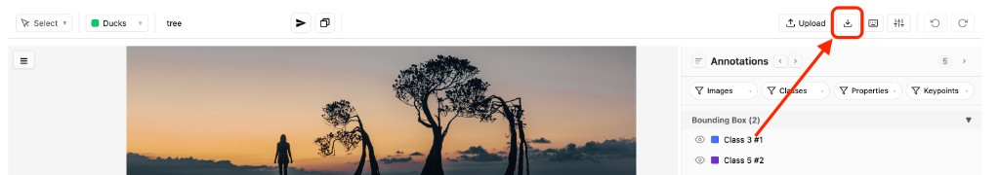
Auto-Save
Annotators should never lose work. The auto-save system operates on two levels:
- Debounced data save (1 second) — every action (create, edit, delete, undo/redo) triggers a save to the local data layer 1 second after the last change. This marks the item as modified (asterisk appears near the item name). Rapid edits consolidate into a single save.
- Server auto-save (60 seconds) — if the item has unsaved changes (asterisk is visible), the editor automatically saves to the server every 60 seconds. The asterisk disappears after a successful server save. This ensures that even if the user forgets to manually click Save, their work is persisted within a minute.
- No save on initial item open (prevents false "modified" flags).
- The manual Save button persists to the server immediately and clears the asterisk.
- See auto-save timing for browser-close guidance.
Solutions
The tool's value is not its feature list — it's how features combine to solve real annotation challenges. Each solution below describes the problem, the recommended configuration, and the workflow, with links to every relevant tool and setting. Adapt the class names and prompts to your data, and you have a production-ready annotation pipeline.
Generative AI
GenAI models are only as good as their training data. Whether fine-tuning image generators, training multimodal LLMs, or building RLHF pipelines, you need annotations that go beyond simple labels — rich descriptions, preference judgments, and quality assessments.
Deep Image Captioning
Problem: Text-to-image and image-to-text models need detailed descriptions. Manual captioning is slow (2–5 min/image) and inconsistent.
Configuration: Class "Image" (bbox type). AI Text property "Caption" with prompt: "Describe this image in detail: objects, colors, spatial relationships, and mood." Configure AI Property Proxy.
Workflow: Draw a full-image bbox → click the wand icon → AI generates caption → review and edit. For variations, use multi-image items. See SAM 3 + AI workflow for combining auto-detection with captioning.
RLHF for Image Generation
Problem: Aligning image generation models requires human preference data — comparing outputs, identifying good/bad aspects, providing structured ratings.
Configuration: JSONL import with 2+ generated images per item. Classes: "Good Aspect" (green), "Bad Aspect" (red) — both bbox type. Properties: "Rating" (Single Select: Excellent/Good/Fair/Poor), "Reason" (Free Text).
Workflow: Navigate frames with ↑/↓ to compare generations. Draw bboxes on good/bad regions. Rate via properties. Group By Image for per-generation review.
Visual Question Answering
Problem: VQA datasets need region-specific question-answer pairs. Manual generation is the most expensive part.
Configuration: Class "Region" (bbox). AI Text properties: "Question" (prompt: "Generate a specific, answerable question about this region"), "Answer" (prompt: "Answer this question about the region").
Workflow: Draw bboxes → wand icon auto-generates Q&A → review.
Synthetic Data Validation
Problem: Synthetic datasets contain artifacts and wrong labels. You need to validate at scale.
Configuration: Multi-image items with generated images. Classes for expected objects. Properties: "Is Correct" (Single Select: Yes/No), "Issue" (Free Text).
Workflow: SAM 3 detects expected objects → Tab review → flag issues → filter "Is Correct = No" to find all flagged images.
Medical Imaging
Medical AI demands the highest annotation precision — a missed tumor boundary degrades diagnostic accuracy. Native DICOM/NIfTI support, pixel masks with panoptic mode, and cross-slice tracking address the core needs of medical annotation.
Radiology — Organ & Lesion Segmentation
Problem: CT/MRI volumes have hundreds of slices. Manual slice-by-slice segmentation is the primary bottleneck.
Configuration: Upload DICOM/NIfTI files (auto-converted to frames). Mask-type classes: "Liver", "Tumor", "Kidney" with distinct colors. Panoptic segmentation mode. Track ID property "Lesion ID" for cross-slice tracking.
Workflow: Navigate slices with ↑/↓. SAM 3 with "liver" or "tumor" for initial masks → refine with brush/eraser. For cross-slice propagation, use SAM 2 Tracking to automatically propagate masks across adjacent slices with morphological cleanup. Adjust brightness/contrast for low-contrast structures. Keep under ~300 frames per item for medical scans (denser annotations per slice → lower frame budget).
Pathology — Cell & Tissue Annotation
Problem: Histopathology images contain thousands of cells. Manual annotation at this density is impractical.
Configuration: Classes: "Cell" (bbox), "Tissue Region" (polygon), "Necrosis" (mask). Property: "Cell Type" (Single Select: Epithelial/Stromal/Inflammatory).
Workflow: SAM 3 with "cell" or "nucleus" → Tab review → classify via property popover. Mind annotation count limits for dense slides.
Dental X-ray Annotation
Problem: Dental AI needs per-tooth labels with structured metadata (number, condition).
Configuration: Classes: "Tooth" (bbox), "Cavity" (polygon). Properties: "Tooth Number" (Free Text), "Condition" (Single Select: Healthy/Decayed/Missing/Restored).
Workflow: SAM 3 with "tooth" → assign metadata via properties → mark pathologies with polygons.
Retinal Imaging
Problem: OCT and fundus images require layer-by-layer segmentation across multi-frame B-scans.
Configuration: Mask-type classes per retinal layer and pathology. DICOM import. Track ID for cross-slice pathologies.
Workflow: Paint masks per layer. Use Semantic mode for non-overlapping layers. Track pathologies across slices.
Document Understanding
Documents combine visual structure (layout) with textual content (words, numbers). PDF import converts pages to annotatable frames, bboxes mark regions, and AI Text properties extract text — automating the most labor-intensive part of document annotation.
Document Layout Analysis
Problem: Document understanding models need structural element locations (titles, tables, paragraphs) on every page.
Configuration: PDF upload. Bbox classes: "Title", "Paragraph", "Table", "Figure", "Header", "Footer", "List" — each with a distinct color.
Workflow: Navigate pages with ↑/↓. SAM 3 with "table" or "figure" for initial detection. Group By Class to verify consistency. Download for training.
OCR Ground Truth
Problem: OCR models need paired data: image region + exact text. Manual transcription of thousands of lines is prohibitively slow.
Configuration: Class "Text Line" (bbox). AI Text property "Transcription" with prompt: "Read and transcribe the exact text in this region. Return only the text." Properties: "Language" (Single Select), "Font Style" (Single Select: Printed/Handwritten).
Workflow: Draw bboxes around text lines (or SAM 3 with "text line") → wand icon auto-transcribes → review in popover. See SAM 3 + AI workflow.
Form & Invoice Parsing
Problem: Extracting key-value pairs from forms requires identifying field labels and values, then pairing them.
Configuration: Classes: "Field Label", "Field Value" (bbox). AI Text properties: "Field Name", "Field Content". Single Select: "Category" (Date/Amount/Name/Address). Pair with Track ID (same ID = related label + value).
Workflow: Bbox labels and values → AI extracts names and content → assign matching Track IDs → filter by property to verify.
Handwriting Recognition
Problem: Handwritten text is highly variable. Recognition models need diverse, accurately transcribed samples.
Configuration: Class "Handwritten Text" (bbox or polygon). AI Text property with prompt tuned for handwriting.
Workflow: Upload scans as images or PDF → annotate regions → AI transcribes → correct where AI struggles.
Financial Services
Financial document processing combines layout analysis, text extraction, and domain-specific classification. The property system captures financial metadata (amounts, dates, accounts) alongside spatial annotations.
Check & Payment Processing
Problem: Models need to locate and read check regions (MICR line, amount, payee, date, signature).
Configuration: Bbox classes per region. AI Text properties for content extraction. Configure AI Property Proxy.
Workflow: Bbox each region → wand extracts content → verify → export.
Chart & Graph Annotation
Problem: Chart understanding models need to identify types, axes, data points, and legends.
Configuration: Classes: "Chart" (bbox), "Axis Label" (bbox), "Data Point" (keypoint), "Legend" (bbox). Properties: "Chart Type" (Single Select), "Description" (AI Text).
Workflow: Bbox the chart → set type → keypoints for data points → AI for descriptions.
Robotics & Physical AI
Robots perceive through cameras and sensors. Training their vision requires 3D poses from keypoints, multi-viewpoint detection from multi-image items, and pixel-level scene segmentation for navigation.
Object Detection for Manipulation
Problem: Pick-and-place robots must detect graspable objects, often from multiple camera angles.
Configuration: Bbox classes per object. Properties: "Graspable" (Single Select), "Material" (Single Select). Multi-camera: JSONL import with multiple viewpoint URLs. Track ID links same object across views.
Workflow: SAM 3 for detection → Tab review → navigate viewpoints with ↑/↓.
Pose Estimation
Problem: Pose models need consistent landmark annotations. Without structured skeletons, annotators swap landmarks (left shoulder as right).
Configuration: Class "Person" (keypoint type). Configure skeleton: Head, Neck, L-Shoulder, R-Shoulder, L-Elbow, R-Elbow, L-Wrist, R-Wrist, L-Hip, R-Hip, L-Knee, R-Knee, L-Ankle, R-Ankle. Define connections (Head→Neck, Neck→L-Shoulder, etc.).
Workflow: Keypoint tool places points sequentially. Skip occluded joints with >. Edit via Select + pencil. QA with keypoint filtering.
Scene Segmentation
Problem: Robot navigation requires pixel-level scene maps — floor, walls, obstacles.
Configuration: Mask classes: "Floor", "Wall", "Obstacle", "Door". Semantic mode for non-overlapping regions; Panoptic for individual obstacles.
Workflow: SAM 3 with "floor"/"wall" → brush refinement. See mask tips.
Multi-Sensor Annotation
Problem: Robots with multiple cameras need synchronized annotations. Separate items per view lose cross-view correspondence.
Configuration: JSONL import with multiple image URLs per item. Track ID links same object across views.
Workflow: Navigate views with ↑/↓. Annotate with matching Track IDs. Yellow bins show which views have the object labeled.
Surveillance & Safety
Anomaly & Hazard Detection
Problem: Safety monitoring requires reviewing footage for rare events and annotating them with structured severity data.
Configuration: Video upload (configurable FPS, max 1000 frames per video file). Bbox classes: "Hazard", "Person", "Vehicle". Properties: "Severity" (Single Select), "Action Required" (Free Text). Track ID for cross-frame tracking.
Workflow: Review frames → SAM 3 for person/vehicle detection → manually annotate hazards → use SAM 2 Tracking to propagate detections across frames automatically → Split View for visual audit → Tab review for detailed verification. Use frame statuses to track review progress.
Tips & Limitations
Efficiency Tips
SAM 3 + AI Property Workflow
The highest-impact acceleration pattern. Manual annotation has two bottlenecks: drawing geometry and filling metadata. SAM 3 eliminates the first; the wand icon eliminates the second.
Works exceptionally well for OCR (detect text lines → transcribe), captioning (detect objects → describe), form parsing (detect fields → extract values), and cell classification (detect cells → classify).
1. SAM 3 prompt → detections · 2. Wand on each instance → AI-filled fields · 3. Properties review (Color, Tracking ID, …)

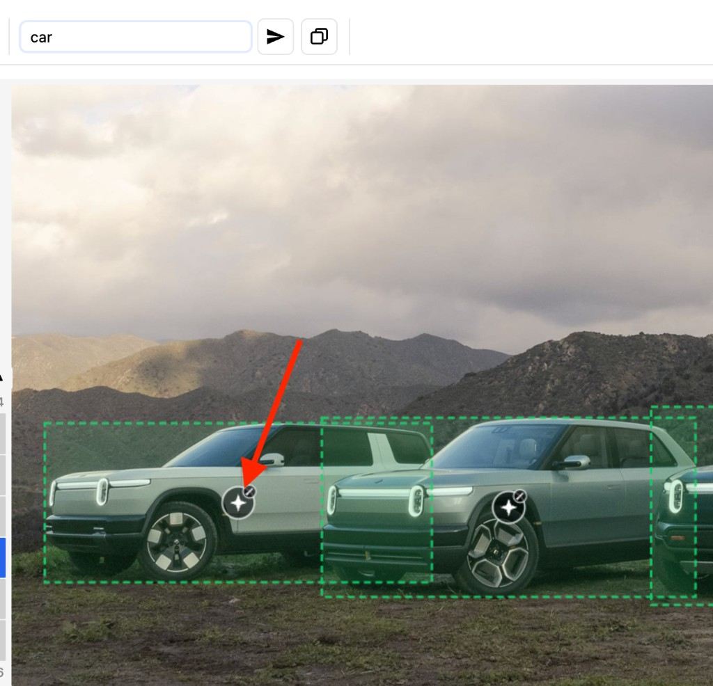
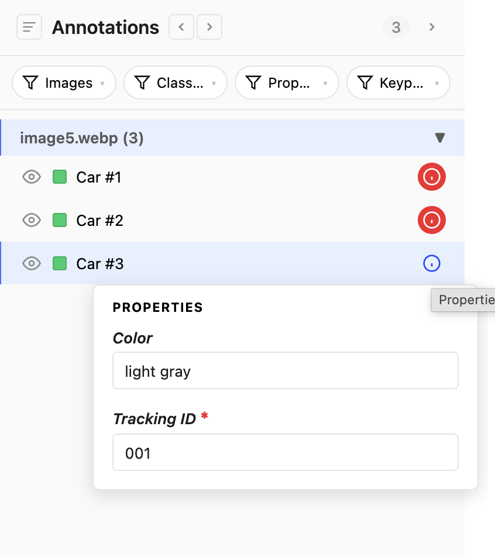
Polygon Tool Modes
Real shapes aren't always simple polygons. A window in a wall, a hole in a cell, overlapping tissue regions — these need boolean geometry.
- Polygon — new regions from scratch.
- Polygon Subtract — remove a region from an existing polygon (create holes, cutouts).
- Polygon Clip — clip the new polygon against any overlapping polygons so they don't overlap and there are no gaps along shared edges.
Switch modes via the gear icon when the polygon tool is active.
Efficient Mask Painting
Pure manual masking is slow; pure AI masking is imprecise. The fastest approach: SAM 3 for initial 80% → brush/eraser for the remaining 20%.
- Square brush for straight edges, circle for organic shapes.
- E for eraser, [/] for size — avoid mouse trips to settings.
- Semantic when classes don't overlap (sky vs ground). Panoptic for separate instances (individual cells).
Keypoint Skeleton Drawing & Editing
Configure the skeleton first. During annotation, points follow the defined order — preventing swapped landmarks. Key techniques:
- > to skip occluded points. < to go back. Right-click also skips.
- After placement: Select tool → pencil icon → drag individual points for fine adjustment.
- QA: keypoint filtering to verify specific joints across all annotations.
Tags vs Properties
Both store structured metadata — the question is scope:
- Item-scope tags describe the whole item. Use for dataset partition (train / val / test), language, source device, capture date, modality.
- Image-scope tags describe a single image / frame. Use for per-frame quality, page condition, slice modality, lighting.
- Properties describe a single annotation. Use for object-level attributes (color, severity, confidence, transcribed text).
Rule of thumb: if you find yourself wanting a property on every annotation in an image, it probably belongs as an image-scope tag. If you want it on every annotation in an item, it's an item-scope tag.
Class Shortcuts (1–9)
In multi-class labeling (e.g., document layout with 7 classes), reaching for the dropdown costs ~2 seconds per annotation. With 1000 annotations per session, that's 30+ minutes on dropdown clicks alone.
- Keys 1–9 select the Nth class and auto-switch the tool.
- Arrange your most-used classes first in configuration.
QA: Overlay Labels
During review, you need to verify class assignments and property values without clicking each annotation.
- Show Classes in Settings — overlays class names on every annotation. Spot misclassifications at a glance.
- Show Properties — verify property values are filled.
- Show Keypoints — see point names on skeletons. Critical for pose estimation QA.
Annotation Filtering & Grouping
Reviewing 500 annotations in an unsorted list is impractical. The panel's filtering and grouping tools turn QA from random browsing into structured inspection.
- Group By — Image, Class, or Tool Type. Isolates what you need.
- Class filter — review one class at a time.
- Property search — find annotations by property value text (e.g., "missing").
- Keypoint filter — show annotations with specific skeleton points. Filter to "Left Wrist" to verify every left wrist across all keypoint annotations — invaluable for dense skeleton QA.
Tab Navigation for Systematic Review
Sequential review ensures nothing is skipped. Tab jumps to the next annotation and auto-zooms to it. Combined with filters: filter to a class → Tab through only those annotations at full-resolution zoom.
Object View QA Workflow
Object View transforms Quality Assurance from a slow, one-by-one inspection process into a rapid grid-based review. Instead of clicking each annotation individually, you see every object across all frames at once — zoomed in, with class labels and property indicators visible.
Why Object View Accelerates QA
- Visual scanning at scale — a 4-column grid lets you review 12–20 objects at a glance without navigating between frames. Misclassified objects or poorly drawn annotations stand out immediately.
- In-place editing — change classes via the dropdown, check/fill properties via the {i} icon, and drag points to adjust geometry — all without leaving the grid.
- Filters narrow the scope — use annotation filters to show only specific classes, properties, or images. Object View respects these filters, so you can review "all Car annotations across all frames" or "all annotations missing a Track ID".
Grouping Strategies for QA
The Group By setting in the annotation panel controls how Object View cells are ordered. Choose the right grouping for your QA goal:
| Group By | Object View shows | Best for |
|---|---|---|
| Class | All "Car" cells together, then all "Person", etc. | Class consistency — spot objects that look like a "Truck" but are labeled "Car". |
| Property (Track ID) | Same tracked object across frames side by side | Tracking verification — confirm the same real-world object is consistently annotated across a video sequence. Spot where tracking drifted or was assigned to the wrong object. |
| Image | All objects from frame 1, then frame 2, etc. | Per-frame completeness — verify every frame has all expected annotations. |
| Status | Objects from completed frames, then in-progress, etc. | Priority review — focus QA on frames marked as "Completed" before export. |
QA Recipe
Auto-Save Safety Net
Annotation changes are automatically saved to the server every 60 seconds when unsaved changes exist. The asterisk (*) near the item name indicates pending changes. You don't need to remember to click Save — the system handles it. However, if you need immediate persistence (e.g., before closing the tab), click Save manually. See Auto-Save for details.
Multi-Image Efficiency
In medical scans or video, frame navigation speed matters.
- ↑/↓ keys instead of clicking the image strip.
- Tracked frames glow yellow — see at a glance which frames need attention.
Object Tracking Across Frames
In video, medical volumes, or multi-camera setups, the same real-world object appears across many frames. Manually re-annotating it on every frame is the biggest time sink in multi-frame labeling. The tracking workflow lets you annotate an object once, link it across frames with a shared ID, and visually verify coverage — so you know exactly which frames still need attention.
Step 1: Configure Tracking
Before annotating, set up a Track ID in configuration:
- Open the Properties modal for the class you want to track.
- Add a Free Text property (e.g., "Object ID" or "Track ID").
- In the Track ID dropdown at the bottom of the modal, select this property.
This tells the editor which property to use for cross-frame identity matching.
Step 2: Annotate & Assign Track IDs
Choose the right tool based on what you're tracking:
| Object type | Tool | Best for |
|---|---|---|
| Vehicles, people, objects | Bounding Box | Fast localization — draw a box, move to next frame, draw again. Use SAM 3 to auto-detect on all frames, then assign Track IDs. |
| Tumors, organs, amorphous regions | Mask | Pixel-accurate tracking of shape-changing objects across medical slices. SAM 3 can generate initial masks per slice. |
| People, animals, articulated objects | Keypoint | Track skeletal poses across frames for pose estimation. Each frame captures the subject's changing pose while the Track ID links them as the same individual. |
On each frame, annotate the object and assign the same Track ID value (e.g., "001") via the property popover. Use copy/paste (Ctrl(⌘)+C/Ctrl(⌘)+V) to duplicate an annotation to the next frame as a starting point, then adjust its position.
Step 3: Visualize Tracking Coverage
Click any annotation that has a Track ID assigned. The vertical frame bins immediately update:
- Blue bin — the frame you're currently viewing.
- Yellow bins — other frames that contain an annotation with the same Track ID.
- Gray bins — frames with no matching Track ID (these may need annotation).
This gives you an instant visual map of where the tracked object has been annotated and where gaps remain. Navigate to gray bins with ↑/↓ to fill the gaps.
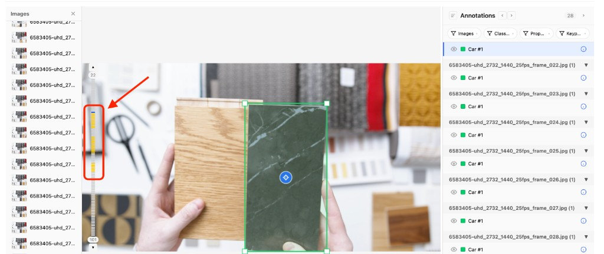
Step 4: Review & Verify
- Use the Tracking Frames slider in Settings to control how many frames of tracking context to display.
- Filter by the Track ID property in the annotation panel to isolate a specific object's annotations across all frames.
- Use Tab navigation to step through each annotation of the tracked object with auto-zoom, verifying spatial accuracy frame by frame.
Tracking Workflow by Use Case
| Use case | Setup | Tracking approach |
|---|---|---|
| Video surveillance | Bbox classes + Track ID | SAM 3 detects people/vehicles on all frames → assign Track IDs → verify yellow bins for coverage |
| CT/MRI lesion tracking | Mask classes + Track ID | SAM 3 segments lesion per slice → same Track ID across slices → yellow bins show which slices have the lesion labeled |
| Pose across video | Keypoint class + Track ID | Place skeleton on each frame → same Track ID links poses → Tab through to verify joint placement consistency |
| Multi-camera | Bbox/mask classes + Track ID | Same object in different camera views gets the same Track ID → yellow bins show which views are covered |
SAM 2 Tracking Workflow
For scenarios where manual frame-by-frame tracking with T is too slow — tracking 5 objects across 100 frames, propagating segmentation masks through a CT volume — SAM 2 Tracking automates the entire process using AI.
When to Use SAM 2 vs. Manual T Tracking
| Scenario | Best approach | Why |
|---|---|---|
| 3–5 frames, minor position changes | T shortcut | Faster than waiting for an API call. Copy, adjust, done. |
| 10+ frames, object moves significantly | SAM 2 Tracking | AI follows the object through motion, scaling, and occlusion — saves 10x manual effort. |
| Mask tracking across medical slices | SAM 2 with mask class | Produces morphologically cleaned segmentation masks with proper shape adaptation per slice. |
| Ambiguous or crowded scene | SAM 2 with point prompts | Green/red points guide the model to distinguish your target from similar nearby objects. |
Best Practices
- Start small: Track 5–10 frames first. Review the results, then extend to more frames if quality is good.
- Use point prompts sparingly: 2–3 positive points on the object and 1–2 negative points on distractors is usually enough. Too many points can confuse the model.
- Verify with Split View: After SAM 2 tracking completes, use Split View to visually audit tracked frames across the sequence at a glance.
- Combine with manual adjustment: SAM 2 gets you 80–90% accuracy automatically. Use Select tool to adjust the remaining 10–20% — still far faster than annotating from scratch.
- Delete and re-track: If results are poor, use Delete by Tracking ID to remove all tracked annotations across frames, refine your point prompts, and re-track.
Limitations
Image Resolution
The tool works with any resolution, but canvas rendering slows above ~8000×8000px. Recommended: keep images under 4000×4000px for smooth interaction. Consider downscaling very large images before annotation.
Annotations Per Image
No hard limit, but performance decreases with very high counts.
- Smooth: under ~500 annotations per image.
- Dense (1000+): split into multiple items or use 1 image per item.
- Particularly relevant for pathology and dense document layout tasks.
Frames Per Item
- Image-list imports are not capped. A JSONL line populating
images[]directly (or appending to it via the in-editor uploader) can carry as many frames as you supply — the editor will load them all. Practical ceiling is set by browser memory and save/load speed; enable Partial Image Loading to keep RAM bounded regardless of item length. - PDF / DICOM / NIfTI extraction has no fixed cap either — every page / slice is extracted. Very large documents are bounded by browser memory; if extraction stalls, split the source into smaller files.
- If each frame has many annotations, the practical ceiling drops sharply. For medical scans with dense labeling, aim for 50–100 frames per item; for general dense work, plan around ~300 frames per item.
- Many frames AND many annotations per frame → 1 image per item for best performance.
- Reason: each frame's annotations are stored in the item value; very large payloads degrade save/load speed.
Mask Data Size
Masks are stored as RLE (run-length encoding) relative to image dimensions. Fine-grained masks on very large images produce large payloads. For mask-heavy workflows, work at moderate resolution.
Browser Compatibility
Best in Chrome and Edge (Chromium). Safari and Firefox supported with minor rendering differences.
API Rate Limits
SAM 3, Region SAM 3, SAM 2 Tracking (all via Fal.ai Proxy), and AI Text autofill calls (via the AI Property Proxy) are subject to provider rate limits. Running SAM 3 on "All Images" with many frames = one API call per frame. SAM 2 Tracking sends one API call per tracking run (covers multiple frames). For large items, batch SAM 3 in groups of 50–100 frames. If you hit rate limits, check your proxy's API key quota in SuperAnnotate → Team Settings → Security → Proxies.
Auto-Save Timing
Auto-save works in two stages: the local data layer is updated 1 second after the last change, and unsaved changes are automatically saved to the server every 60 seconds. The asterisk (*) near the item name indicates unsaved changes — it disappears after a successful server save. If you need immediate persistence, click the Save button manually. Wait at least 2 seconds before closing the tab to ensure at minimum the local data layer has been updated.